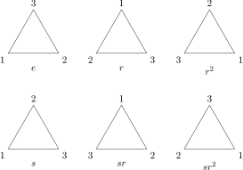
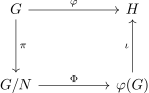

OI Wiki · prijevod · MatematikaOI Wiki · translation · Mathematics
Teorija grupaGroup theory
Sadržaj
Preduvjeti: Osnovni pojmovi apstraktne algebre, Permutacije
Uvod
Teorija grupa (group theory) proučava ponajprije grupu kao algebarsku strukturu.
Za proučavanje strukture grupa potrebno je ovladati nekim osnovnim alatima, a to su podgrupe, homomorfizmi grupa i djelovanja grupa. U algoritamskim natjecanjima najčešće se pojavljuju grupe vezane uz teoriju brojeva (npr. multiplikativna grupa cijelih brojeva modulo \(n\), \((\mathbf Z/n\mathbf Z)^\times\)) te grupe permutacija, pa ovaj članak naglasak stavlja na pojmove vezane uz njih. Dijelove teorije grupa koje članak ne obrađuje, poput strukturne teorije konačnih grupa i teorije linearnih reprezentacija grupa, zainteresirani čitatelj treba potražiti u stručnoj literaturi.
Oznake
Kad ne može doći do zabune, u ovom ćemo članku \(g\cdot h\) pisati kao \(gh\), a grupu \((G,\cdot)\) kao grupu \(G\).
Apstraktna se algebra ne može razumjeti bez primjera. Kao primjer za razumijevanje pojmova u nastavku ovdje razmatramo grupu prostornih simetrija jednakostraničnog trokuta \(D_6\).
Primjer: grupa prostornih simetrija jednakostraničnog trokuta \(D_6\)
Kao što prikazuje slika, za zadani jednakostranični trokut postoji ukupno šest različitih operacija koje ga preslikavaju na samog sebe.

Ovdje \(r\) označava rotaciju u smjeru kazaljke na satu, a \(s\) zrcaljenje (preokretanje) oko pravca kroz vrh \(1\) i središte trokuta; operacije se komponiraju zdesna nalijevo, tj. \(sr\) znači da se najprije rotira (\(r\)), a zatim zrcali (\(s\)). Dvije su operacije različite ako i samo ako se neki vrh trokuta nakon njih nalazi na različitim mjestima.
| Oznaka | Operacija | Red | Permutacijski prikaz |
|---|---|---|---|
| \(e\) | identiteta, tj. ne radi se ništa | 1 | \((1)\) |
| \(r\) | rotacija za \(120^\circ\) u smjeru kazaljke na satu | 3 | \((123)\) |
| \(r^2\) | rotacija za \(240^\circ\) u smjeru kazaljke na satu | 3 | \((132)\) |
| \(s\) | zrcaljenje oko pravca kroz \(1\) i središte | 2 | \((23)\) |
| \(sr\) | najprije rotacija za \(120^\circ\), zatim zrcaljenje | 2 | \((13)\) |
| \(sr^2\) | najprije rotacija za \(240^\circ\), zatim zrcaljenje | 2 | \((12)\) |
Lako se provjerava da te operacije doista čine grupu. Primjerice, neutralni element te grupe je \(e\), a inverz elementa \(sr\) je on sam. Štoviše, grupa \(D_6\) nije komutativna; npr. izravno se provjerava da je \(rs=sr^{-1}\).
Operacije zabilježene u tablici nisu jedine operacije simetrije koje odgovaraju danoj oznaci. Primjerice, „zrcaljenje oko pravca kroz \(2\) i središte” također je simetrija trokuta; nema je u tablici, ali joj je rezultat jednak rezultatu operacije „najprije rotacija za \(120^\circ\), zatim zrcaljenje”. Pojmovi iz tablice kao što su „red” i „permutacijski prikaz” objašnjavaju se u nastavku.
Podgrupe
Da bismo razumjeli strukturu zadane grupe, možemo najprije analizirati njezine podstrukture. Podstrukture grupe su oni njezini podskupovi koji su uz istu operaciju i sami grupe. Odatle sljedeća definicija.
Podgrupa
Za grupu \((G,\cdot)\) i njezin podskup \(H\subseteq G\), ako je i \((H,\cdot)\) grupa, podskup \(H\) naziva se podgrupom (subgroup) grupe \(G\) i piše se \(H\le G\).
Primjer: grupa prostornih simetrija jednakostraničnog trokuta \(D_6\) (nastavak)
U \(D_6\) se lako provjerava da su njezine podgrupe \(\{e\}\), \(\{e,s\}\), \(\{e,sr\}\), \(\{e,sr^2\}\), \(\{e,r,r^2\}\) i sama \(D_6\), ukupno šest. Osim same grupe \(D_6\), sve te podgrupe imaju jednostavniju strukturu, a ipak sadrže dio informacija o polaznoj grupi.
Da bismo provjerili je li zadani podskup \(H\subseteq G\) podgrupa, ne treba redom provjeravati sve aksiome grupe: asocijativnost vrijedi automatski; da bi podskup bio podgrupa, dovoljno je da je zatvoren na binarnu operaciju, da sadrži neutralni element i da je zatvoren na invertiranje. Zapravo, ti se uvjeti mogu sažeti u jedan.
Teorem (kriterij podgrupe)
Neprazan podskup \(H\) grupe \(G\) podgrupa je ako i samo ako za sve elemente \(g,h \in H\) vrijedi \(g^{-1}h\in H\).
Podgrupa generirana podskupom
Općenito, za zadani podskup \(S\) grupe \(G\), skup svih rezultata koji se iz elemenata skupa \(S\) mogu dobiti konačno mnogo uzastopnih množenja i invertiranja čini podgrupu grupe \(G\). Ona se naziva podgrupom generiranom podskupom \(S\).
Podgrupa generirana podskupom
Za grupu \(G\) i njezin neprazan podskup \(S\subseteq G\), ako je \(H\) (s obzirom na inkluziju) najmanja među podgrupama grupe \(G\) koje sadrže \(S\), podgrupa \(H\) naziva se podgrupom generiranom podskupom \(S\) (subgroup generated by a subset) i označava se \(\langle S\rangle\). Posebno, ako je \(S=\{x\}\) jednočlan skup, \(\langle S\rangle\) se piše i \(\langle x\rangle\) te se naziva cikličkom podgrupom potencija elementa \(x\) (cyclic subgroup of the powers of an element).
Može se dokazati da za svaki takav podskup \(S\) takva podgrupa uvijek postoji: \(\langle S\rangle\) se može konstruirati kao presjek svih podgrupa grupe \(G\) koje sadrže \(S\).
Primjer: grupa prostornih simetrija jednakostraničnog trokuta \(D_6\) (nastavak)
Odaberemo li u grupi \(D_6\) rotaciju \(r\) i uzastopno primjenjujemo nju i njezin inverz, dobivamo podgrupu \(\{e,r,r^2\}\). Ona se može zapisati kao \(\langle r\rangle\). Sve netrivijalne podgrupe grupe \(D_6\) mogu se generirati odabirom neke operacije.
Podgrupa generirana nekim podskupom može biti i cijela grupa. Takvi su podskupovi posebno važni i nazivaju se generirajućim skupovima grupe.
Generirajući skup grupe
Ako podskup \(S\subseteq G\) grupe \((G,\cdot)\) zadovoljava \(\langle S\rangle=G\), \(S\) se naziva generirajućim skupom (generating set of a group) grupe \(G\). Elementi generirajućeg skupa \(S\) nazivaju se generatorima (generator).
Grupa je trivijalno svoj vlastiti generirajući skup. Zanimljiviji je slučaj kad je generirajući skup mnogo manji od same grupe.
Primjer: grupa prostornih simetrija jednakostraničnog trokuta \(D_6\) (nastavak)
Može se provjeriti da je \(D_6=\langle s,r\rangle\), tj. svaka simetrija jednakostraničnog trokuta može se dobiti kompozicijom rotacija i zrcaljenja.
Cikličke grupe
Struktura grupe generirane samo jednim elementom vrlo je jednostavna. Takve se grupe nazivaju cikličkima.
Ciklička grupa
Za grupu \(G\), ako postoji \(x\in G\) takav da je \(G=\langle x\rangle\), \(G\) se naziva cikličkom grupom (cyclic group).
Primjer: grupa prostornih simetrija jednakostraničnog trokuta \(D_6\) (nastavak)
Sve netrivijalne podgrupe grupe \(D_6\), kao i \(\{e\}\), cikličke su grupe.
Može se dokazati da je struktura cikličke grupe jednoznačno određena njezinom veličinom. Ako je ciklička grupa beskonačna, nužno ima istu strukturu kao aditivna grupa cijelih brojeva \((\mathbf Z,+)\) i označava se \(C_\infty\) ili \(\mathbf Z\); inače, označimo li broj njezinih elemenata s \(n\in\mathbf N_+\), ona nužno ima istu strukturu kao aditivna grupa klasa ostataka modulo \(n\), \((\mathbf Z/n\mathbf Z,+)\), i označava se \(C_n\) ili \(\mathbf Z_n\). Za precizan iskaz te tvrdnje potreban je pojam izomorfizma grupa iz nastavka, koji strogo opisuje činjenicu da dvije grupe imaju istu strukturu.
Teorem o klasifikaciji cikličkih grupa
Konačna ciklička grupa \(G\) veličine \(n\) izomorfna je grupi \(C_n\); beskonačna ciklička grupa \(G\) izomorfna je grupi \(C_\infty\).
Dokaz
Zadana ciklička grupa \(G=\langle x\rangle\) uvijek se može zapisati kao \(G=\{x^n:n\in\mathbf Z\}\). Ako je grupa \(G\) konačna, nužno postoje prirodni brojevi \(n<m\) takvi da je \(x^n=x^m\), pa po zakonu kraćenja dobivamo \(x^{m-n}=e\). Uzmimo sada najmanji pozitivni cijeli broj \(n\in\mathbf N_+\) takav da je \(x^n=e\); tada je niz \(\{x^k\}\) periodičan s periodom duljine \(n\), a elementi unutar jednog perioda međusobno su različiti (inače bi se narušila minimalnost broja \(n\)). Tada preslikavanje \(x^k\mapsto\bar k\) daje izomorfizam \(G\rightarrow\mathbf Z/n\mathbf Z\), tj. \(G\cong C_n\). Obratno, ako je grupa \(G\) beskonačna, elementi grupe \(G\) međusobno su različiti, pa preslikavanje \(x^k\mapsto k\) daje izomorfizam \(G\rightarrow\mathbf Z\), tj. \(G\cong C_\infty\).
Sve su cikličke grupe Abelove. Primjer \(D_6\) iz ovog članka pokazuje da grupa ne mora biti Abelova čak ni kad su joj sve netrivijalne podgrupe cikličke.
Red
Red grupe je broj njezinih elemenata. Red zadanog elementa grupe je red cikličke podgrupe koju taj element generira. Odatle sljedeće definicije:
Red grupe
Red (order) grupe \(G\) je broj njezinih elemenata i označava se \(|G|\). Red beskonačne grupe također je beskonačan.
Red elementa
Red (order) elementa \(x\in G\) grupe \(G\) najmanji je pozitivni cijeli broj \(n\) takav da vrijedi \(x^n=e\) i označava se \(|x|\); ako takav \(n\) ne postoji, kaže se da je red elementa \(x\) beskonačan i piše se \(|x|=\infty\).
Red elementa nikad nije veći od reda grupe; štoviše, u nastavku ćemo dokazati da red elementa uvijek dijeli red grupe. Red grupe, međutim, nije uvijek najveći red nekog elementa: npr. \(D_6\) je grupa reda šest, ali je najveći red elementa \(3\). Red grupe nije ni najmanji zajednički višekratnik redova svih elemenata: npr. Kleinova četvorna grupa1 \(V_4\) ima red \(4\), ali sadrži samo elemente reda \(1\) i reda \(2\).
Teorem
U konačnoj cikličkoj grupi \(C_n=\langle x\rangle\) red elementa \(x^k\) jednak je
Posebno, broj generatora grupe \(C_n\) jednak je \(\varphi(n)\), gdje je \(\varphi(\cdot)\) Eulerova funkcija.
Kao primjenu gornjeg razmatranja primijetimo da je red multiplikativne grupe cijelih brojeva modulo \(n\) jednak \(\varphi(n)\), a red svakog elementa \(a\) te grupe dijeli ga, pa nužno vrijedi \(a^{\varphi(n)}=1\). To je upravo Eulerov teorem, jer su elementi te grupe upravo svi elementi relativno prosti s \(n\).
Susjedne klase
Ni elementi grupe izvan podgrupe nisu raspoređeni kaotično.
Primjer: grupa prostornih simetrija jednakostraničnog trokuta \(D_6\) (nastavak)
Promotrimo podgrupu \(\langle r\rangle\) grupe \(D_6\): preostali elementi \(\{s,sr,sr^2\}\) imaju strukturu vrlo sličnu podgrupi \(\langle r\rangle\): svaka se operacija među njima može dobiti kompozicijom operacije \(s\) i neke operacije iz \(\langle r\rangle\). Slično, promotrimo li podgrupu \(\langle s\rangle\), preostali se elementi grupe mogu podijeliti u dvije klase, \(\{r,sr\}\) i \(\{r^2,sr^2\}\), koje se dobivaju kompozicijom elemenata iz \(\langle s\rangle\) redom s \(r\) odnosno s \(r^2\). Ta je pojava opća.
Za zadanu podgrupu mogu se definirati njezine susjedne klase.
Susjedna klasa
Neka je \(G\) grupa i \(H\le G\) njezina podgrupa. Lijeva susjedna klasa (left coset) i desna susjedna klasa (right coset) podgrupe \(H\) koje sadrže \(g\) definiraju se redom kao skupovi
Elementi susjedne klase nazivaju se njezinim predstavnicima (representative element).
I sama podgrupa jedna je od svojih susjednih klasa. Za zadanu podgrupu sve susjedne klase čine particiju grupe, tj. grupa je disjunktna unija svih susjednih klasa. Particija se uvijek može shvatiti kao skup klasa ekvivalencije neke relacije ekvivalencije. Za particiju na lijeve susjedne klase ta je relacija ekvivalencije \(g_1\sim g_2\) ako i samo ako \(g_1^{-1}g_2\in H\); za particiju na desne susjedne klase to je relacija \(g_1\sim g_2\) ako i samo ako \(g_1g_2^{-1}\in H\).
Primjer: grupa prostornih simetrija jednakostraničnog trokuta \(D_6\) (nastavak)
Jezikom susjednih klasa, u gornjem se primjeru \(D_6\) može rastaviti kao \(\langle r\rangle\cup s\langle r\rangle\) odnosno kao \(\langle s\rangle\cup \langle s\rangle r \cup \langle s\rangle r^2\). Pritom prvi rastav dijeli grupu na lijeve susjedne klase, a drugi na desne. Treba primijetiti da izbor predstavnika nije ni po čemu poseban; npr. može se provjeriti da je \(s\langle r\rangle=sr\langle r\rangle\). Svaki element susjedne klase njezin je predstavnik.
Sve susjedne klase iste podgrupe jednako su velike i jednake su veličini te podgrupe. Budući da sve susjedne klase zadane podgrupe čine particiju grupe, red konačne grupe nužno je cjelobrojni višekratnik reda podgrupe. To je Lagrangeov teorem.
Lagrangeov teorem
Za konačnu grupu \(G\) i njezinu podgrupu \(H\le G\) vrijedi \(|G|=[G:H]|H|\), gdje \([G:H]\) označava broj lijevih (desnih) susjednih klasa podgrupe \(H\) u \(G\) i naziva se indeksom (index) podgrupe \(H\) u grupi \(G\).
Dokaz
Promotrimo preslikavanje \(h\mapsto gh\) množenja slijeva elementom \(g\); ono i preslikavanje \(h\mapsto g^{-1}h\) međusobno su inverzna, pa su oba bijekcije. To pokazuje da uvijek vrijedi \(|H|=|gH|\).
Primijetimo da je red elementa jednak redu cikličke podgrupe koju on generira, pa i red elementa nužno dijeli red grupe.
Normalne podgrupe
Općenito, lijeve i desne susjedne klase zadane podgrupe nisu jednake.
Primjer: grupa prostornih simetrija jednakostraničnog trokuta \(D_6\) (nastavak)
U grupi \(D_6\) vrijedi \(\langle s\rangle r=\{r,sr\}\), ali \(r\langle s\rangle=\{r,sr^2\}\). No promotrimo li podgrupu \(\langle r\rangle\), lijeve i desne susjedne klase uvijek su jednake, jer grupa tada ima samo dvije susjedne klase, a podgrupa je, kao jedna od susjednih klasa, nužno zajednička objema particijama.
Jesu li lijeve i desne susjedne klase jednake odražava svojstvo odgovarajuće podgrupe.
Normalna podgrupa
Neka je \(N\le G\) podgrupa grupe \(G\). Ako za sve \(h\in N\) i \(g\in G\) vrijedi \(ghg^{-1}\in N\), drugim riječima, ako za sve \(g\in G\) vrijedi \(gNg^{-1}\subseteq N\), \(N\) se naziva normalnom podgrupom (normal subgroup) grupe \(G\) i piše se \(N\trianglelefteq G\).
Uvjet iz te definicije ekvivalentan je tome da uvijek vrijedi \(gN=Ng\). Grupa \(G\) uvijek ima trivijalne normalne podgrupe, naime \(\langle e\rangle\) i samu \(G\).
Primjer: grupa prostornih simetrija jednakostraničnog trokuta \(D_6\) (nastavak)
U grupi \(D_6\) podgrupa \(\langle s\rangle\) nije normalna, a \(\langle r\rangle\) jest.
Kvocijentne grupe
Normalne su podgrupe vrlo važna vrsta podgrupa, a jedan je od razloga to što se pomoću njih mogu definirati kvocijentne grupe.
Za grupu \(G\) i njezinu normalnu podgrupu \(N\trianglelefteq G\) promotrimo skup svih susjednih klasa
Lijeve i desne susjedne klase tada se podudaraju pa ih ne treba razlikovati. Polazeći od operacije grupe \(G\), na \(G/N\) možemo definirati binarnu operaciju \(\circ\) koja zadovoljava
Može se dokazati da rezultat operacije ne ovisi o izboru predstavnika2. Tada \((G/N,\circ)\) doista ima strukturu grupe i naziva se kvocijentnom grupom (quotient group) grupe \(G\) po \(N\). Kvocijentna grupa \(G/N\) nije podgrupa grupe \(G\); svaki je njezin element podskup grupe \(G\).
Primjer: grupa prostornih simetrija jednakostraničnog trokuta \(D_6\) (nastavak)
U grupi \(D_6\) značenje kvocijentne grupe \(G/\langle r\rangle\) vrlo je očito. Ona odgovara tome da među svim tim simetrijama zanemarimo kut za koji operacija rotira trokut i promatramo samo je li ga preokrenula. Kompozicija dviju operacija koje preokreću trokut odgovara tome da trokut nije preokrenut; ako pak od dviju operacija jedna preokreće trokut, a druga ne, i kompozicija ga nužno preokreće. I samo „je li preokrenut ili nije” ima strukturu grupe. Zanemariti u grupi \(D_6\) pojedinosti rotacije i promatrati samo ima li preokretanja algebarski znači složenu grupu \(D_6\) kvocijentirati po \(\langle r\rangle\) i dobiti kvocijentnu grupu \(D_6/\langle r\rangle\). To razmatranje ne vrijedi za podgrupu \(\langle s\rangle\): zanemarimo li ima li preokretanja, kut rotacije više se ne može jednoznačno odrediti, i zato \(G/\langle s\rangle\) nema strukturu kvocijentne grupe.
Kvocijentna grupa pojednostavnjuje složenu grupu i omogućuje da promatranjem dijela njezine strukture razumijemo strukturu polazne grupe. Zato se kvocijentna grupa naziva i faktorskom grupom (factor group). Grupa koja osim trivijalnih normalnih podgrupa nema drugih normalnih podgrupa naziva se jednostavnom grupom (simple group); takve se grupe ne mogu svesti na manje grupe. Poput prostih brojeva, one su gradivni blokovi složenijih struktura grupa.
Homomorfizmi grupa
Drugi način razumijevanja strukture zadane grupe jest međusobno uspoređivanje struktura dviju grupa.
Usporediti strukture dviju grupa znači konstruirati preslikavanje između njih. No takvo preslikavanje ne može biti proizvoljno: mora čuvati strukturu grupe, tj. operacija grupe mora se podudarati prije i poslije preslikavanja. Takva se preslikavanja nazivaju homomorfizmima grupa.
Homomorfizam grupa
Neka je \(\varphi:G\rightarrow H\) preslikavanje iz grupe \((G,\cdot)\) u grupu \((H,\odot)\). Ako \(\varphi\) čuva operaciju grupe, tj. ako za sve \(g_1,g_2\in G\) vrijedi \(\varphi(g_1\cdot g_2)=\varphi(g_1)\odot\varphi(g_2)\), preslikavanje \(\varphi\) naziva se homomorfizmom (homomorphism) iz grupe \(G\) u grupu \(H\).
Homomorfizam grupa nužno preslikava neutralni element u neutralni element, a inverz u inverz.
Oznake
U nastavku, kad ne može doći do zabune, nećemo razlikovati oznake operacija u grupama \(G\) i \(H\), a radi jednostavnosti zapisa te ćemo oznake izostavljati.
Izomorfizam grupa
Za homomorfizam \(\varphi:G\rightarrow H\) iz grupe \(G\) u grupu \(H\) prirodno se postavlja pitanje u kojoj mjeri taj homomorfizam pokazuje da su strukture grupa \(G\) i \(H\) jednake. U tu svrhu promotrimo sliku \(\varphi(G)\) grupe \(G\) pri homomorfizmu \(\varphi\); ona preslikava strukturu grupe \(G\) u grupu \(H\). S jedne strane, \(\varphi(G)\) je podgrupa grupe \(H\), ali ako homomorfizam \(\varphi\) nije surjekcija, \(\varphi(G)\) nije jednaka grupi \(H\). S druge strane, homomorfizam \(\varphi\) ne mora biti ni injekcija; ako \(\varphi\) nije injekcija, \(\varphi(G)\) odražava samo dio strukture grupe \(G\). Tek kad je homomorfizam \(\varphi\) bijekcija, strukture grupa \(G\) i \(H\) potpuno su jednake. Takav se posebni homomorfizam grupa naziva izomorfizmom grupa.
Izomorfizam grupa
Neka je \(\varphi:G\rightarrow H\) homomorfizam iz grupe \(G\) u grupu \(H\). Ako je \(\varphi\) bijekcija, \(\varphi\) se naziva izomorfizmom (isomorphism) grupa \(G\) i \(H\), što se zapisuje \(G\cong H\).
Dvije izomorfne grupe imaju potpuno jednaku strukturu. Zanima li nas samo struktura grupe, dvije izomorfne grupe nema potrebe razlikovati. Teorem o klasifikaciji cikličkih grupa iz prethodnog teksta iskazan je upravo do na izomorfizam.
Primjer: grupa prostornih simetrija jednakostraničnog trokuta \(D_6\) (nastavak)
Vratimo se na prethodni primjer: svaka simetrija jednakostraničnog trokuta jednoznačno odgovara jednoj permutaciji skupa vrhova. Sve permutacije skupa vrhova također čine grupu, naime \(S_3\). Lako se provjerava da je tako dobiveno preslikavanje \(\varphi:D_6\rightarrow S_3\) homomorfizam grupa; štoviše, ono je i izomorfizam grupa. Dakle, \(D_6\cong S_3\). Zapravo, grupa reda šest izomorfna je ili grupi \(C_6\) ili grupi \(S_3\) (dokaz vidi u nastavku).
Klasifikacija struktura konačnih grupa zadanog reda važno je područje istraživanja u teoriji grupa, ali izlazi iz okvira ovog članka.
Jezgra homomorfizma
Za opći homomorfizam možemo dalje razmotriti koliko se informacija o strukturi grupe gubi u homomorfizmu. Zadržavamo oznake iz prethodnog teksta. Već znamo da je \(\varphi(G)\) podgrupa grupe \(H\); ključno je sada pitanje odnosa između \(\varphi(G)\) i grupe \(G\).
Primjer: grupa prostornih simetrija jednakostraničnog trokuta \(D_6\) (nastavak)
Promotrimo preslikavanje \(\varphi: D_6 \rightarrow C_2 = \langle x\rangle\) definirano ovako:
Lako se provjerava da je \(\varphi\) homomorfizam grupa; on je surjekcija, ali nije injekcija. Njegovo je značenje očito: svaku simetriju preslikava na to sadrži li ona preokretanje ili ne. Informacija o grupi \(D_6\) koju takav homomorfizam sažima upravo je informacija o kutu rotacije. Primjerice, ako nema preokretanja, rotacija za bilo koji kut preslikava se u neutralni element grupe \(C_2\).
Taj primjer navodi na to da se strukturna informacija izgubljena u homomorfizmu mjeri praslikom skupa \(\{e\}\). Zato uvodimo sljedeću definiciju.
Jezgra homomorfizma
Neka je \(\varphi:G\rightarrow H\) homomorfizam iz grupe \(G\) u grupu \(H\). Jezgra (kernel) homomorfizma \(\varphi\) je \(\ker\varphi=\{g\in G:\varphi(g)=e\}\), gdje je \(e\) neutralni element grupe \(H\).
Osnovni teorem o homomorfizmu
Jezgra \(\ker\varphi\) doista opisuje strukturnu informaciju izgubljenu u homomorfizmu grupa. Precizan iskaz te tvrdnje je osnovni teorem o homomorfizmu (zvan i prvi teorem o izomorfizmu) (fundamental theorem of group homomorphism, a.k.a., first isomorphism theorem).
Osnovni teorem o homomorfizmu (prvi teorem o izomorfizmu)
Neka je \(\varphi:G\rightarrow H\) homomorfizam iz grupe \(G\) u grupu \(H\). Tada je \(\ker\varphi\trianglelefteq G\) i \(G/\ker\varphi\cong\varphi(G)\le H\).
Dokaz
Najprije, \(N=\ker\varphi\) je normalna podgrupa, jer za svaki \(h\in N\) vrijedi \(\varphi(ghg^{-1})=\varphi(g)\varphi(h)\varphi(g)^{-1}=\varphi(g)\varphi(g)^{-1}=e\), tj. \(ghg^{-1}\in\ker\varphi\). Zatim promotrimo preslikavanje \(\Phi:G/N\rightarrow\varphi(G)\) koje zadovoljava \(\Phi(gN)=\varphi(g)\). Preslikavanje je dobro definirano, jer ako je \(g_1N=g_2N\), onda je \(g_1^{-1}g_2\in N\), pa je \(\varphi(g_1^{-1}g_2)=e\), tj. \(\varphi(g_1)=\varphi(g_2)\). Preslikavanje \(\Phi\) očito je surjekcija; ono je i injekcija, jer je \(\ker\Phi=\{gN:\varphi(g)=e\}=\{N\}\). Stoga je \(\Phi\) izomorfizam grupa. Naposljetku, \(\varphi(g_1)\varphi(g_2)^{-1}=\varphi(g_1g_2^{-1})\in\varphi(G)\), pa je po kriteriju podgrupe \(\varphi(G)\) nužno podgrupa.
Korolar
Homomorfizam \(\varphi:G\rightarrow H\) injekcija je ako i samo ako je \(\ker\varphi=\{e\}\). Tada je \(G\) izomorfna nekoj podgrupi grupe \(H\), tj. \(G\cong\varphi(G)\le H\).
Drugim riječima, jezgra homomorfizma \(\varphi\) normalna je podgrupa grupe \(G\), a kvocijentna grupa \(G/\ker\varphi\) dobivena kvocijentiranjem po \(\ker\varphi\) izomorfna je slici \(\varphi(G)\) homomorfizma, koja je pak podgrupa grupe \(H\).
Primjer: grupa prostornih simetrija jednakostraničnog trokuta \(D_6\) (nastavak)
Jezgra gore navedenog homomorfizma grupa \(\varphi: D_6 \rightarrow C_2\) je \(\langle r\rangle\), a pri razmatranju normalnih podgrupa već smo vidjeli da je \(D_6/\langle r\rangle\) doista izomorfna grupi \(C_2\).
Prirodni homomorfizam
Takav zaključak ne iznenađuje. Naime, pri konstrukciji homomorfizma \(\varphi: D_6 \rightarrow C_2\) iskoristili smo upravo geometrijsko značenje kvocijentne grupe \(D_6/\langle r\rangle\). Ta pojava nije rijetka. Zapravo, za svaku kvocijentnu grupu može se konstruirati homomorfizam grupa čija je slika izomorfna zadanoj kvocijentnoj grupi.
Prirodni homomorfizam
Za grupu \(G\) i njezinu normalnu podgrupu \(N\trianglelefteq G\) preslikavanje \(\pi: G\rightarrow G/N\) zadano s \(\pi(g)=gN\) surjektivni je homomorfizam iz \(G\) u \(G/N\) i naziva se prirodnim homomorfizmom (natural homomorphism) ili prirodnim preslikavanjem iz grupe \(G\) u kvocijentnu grupu \(G/N\).
Ta tvrdnja pokazuje i da se za svaku normalnu podgrupu zadane grupe može naći homomorfizam grupa čija je jezgra upravo ta normalna podgrupa. Osnovni teorem o homomorfizmu pak pokazuje da je jezgra svakog homomorfizma normalna podgrupa. Normalne podgrupe i jezgre homomorfizama stoga su dvije strane iste medalje.
Pomoću pojma prirodnog preslikavanja osnovni teorem o homomorfizmu zapravo kaže da vrijedi sljedeći komutativni dijagram (commutative diagram).

Ovdje su sve strelice homomorfizmi grupa, \(N=\ker\varphi\) je jezgra homomorfizma \(\varphi\), a \(\varphi(G)\) slika homomorfizma \(\varphi\). Ta su preslikavanja redom: \(\pi:g\mapsto gN\) prirodno preslikavanje (surjektivni homomorfizam) iz grupe \(G\) u kvocijentnu grupu \(G/N\), \(\Phi:gN\mapsto\varphi(g)\) izomorfizam, a \(\iota\) ulaganje (injektivni homomorfizam). Komutativnost dijagrama znači da kompozicije preslikavanja duž dvaju različitih putova od \(G\) do \(H\) daju isti rezultat, tj. \(\varphi=\iota\circ\Phi\circ\pi\). Komutativni dijagram jasno pokazuje da se informacija koju homomorfizam \(\varphi\) gubi odražava upravo u \(\pi\) i \(\iota\).
Teoremi o izomorfizmu
Snažan alat za razumijevanje strukture grupa jesu teoremi o izomorfizmu. Prvi teorem o izomorfizmu već smo naveli. Radi potpunosti ovdje navodimo i ostale uobičajene teoreme o izomorfizmu.
Drugi teorem o izomorfizmu uključuje pojam produkta podgrupa.
Produkt podskupova
Za grupu \(G\) i njezine podskupove \(A,B\subseteq G\), produkt (product) podskupova \(A\) i \(B\) je podskup \(AB=\{ab:a\in A,b\in B\}\).
Produkt podgrupa nije uvijek podgrupa. Primjerice, produkt podgrupa \(A=\langle s\rangle\) i \(B=\langle sr\rangle\) grupe \(D_6\) jednak je \(AB=\{e,s,r,sr\}\), što nije podgrupa grupe \(G\), jer je \((sr)s=r^2\notin AB\). Zapravo, protuprimjeri oblika \(a\in A\), \(b\in B\), ali \(ba\notin AB\) upravo su temeljni razlog zašto produkt nije podgrupa. O tome govori sljedeći teorem.
Teorem
Za grupu \(G\) i njezine podgrupe \(A,B\le G\) produkt \(AB\) je podgrupa ako i samo ako je \(AB=BA\).
Dokaz
Ako je produkt \(AB\) podgrupa, nužno za sve \(a\in A\) i \(b\in B\) vrijedi \(ba=(a^{-1}b^{-1})^{-1}\in AB\), pa je \(BA\subseteq AB\). Obratno, ako je \(AB=BA\), onda za sve \(a_1,a_2\in A\) i \(b_1,b_2\in B\) vrijedi \((a_1b_1)(a_2b_2)^{-1}=a_1b_1b_2^{-1}a_2^{-1}\in a_1BA=a_1AB=AB\), pa je po kriteriju podgrupe \(AB\) nužno podgrupa.
Drugi teorem o izomorfizmu (second isomorphism theorem, a.k.a., diamond isomorphism theorem) daje jednostavniji dovoljan uvjet da produkt podgrupa bude podgrupa te dodatno određuje njegovu strukturu.
Drugi teorem o izomorfizmu
Neka grupa \(G\) i podgrupe \(A,B\le G\) zadovoljavaju \(A\le N_G(B)\). Tada je \(AB\le G\), te \(B\trianglelefteq AB\), \(A\cap B\trianglelefteq A\) i \(AB/B\cong A/(A\cap B)\). Ovdje je \(N_G(B)\) normalizator podgrupe \(B\). Posebno, dovoljan uvjet za \(A\le N_G(B)\) jest \(B\trianglelefteq G\).
Dokaz
Budući da je \(A\le N_G(B)\), za sve \(a\in A\) nužno vrijedi \(aBa^{-1}=B\), tj. \(aB=Ba\). Stoga je nužno \(AB=BA\), pa je po gornjem teoremu \(AB\) podgrupa. Podgrupa \(B\), kao podgrupa od \(AB\), ima jednake lijeve i desne susjedne klase, pa je \(B\trianglelefteq AB\).
Promotrimo preslikavanje \(\varphi:A\rightarrow AB/B\) koje zadovoljava \(\varphi(a)=aB\); ono je surjekcija i jezgra mu je \(\ker\varphi=\{a\in A:aB=B\}=A\cap B\). Primjenom osnovnog teorema o homomorfizmu dobiva se tvrdnja.
Treći teorem o izomorfizmu (third isomorphism theorem) daje vezu između normalnih podgrupa i kvocijentnih grupa kvocijentne grupe te normalnih podgrupa i kvocijentnih grupa polazne grupe. On opravdava ideju daljnjeg rastavljanja kvocijentne grupe.
Treći teorem o izomorfizmu
Neka grupa \(G\) ima normalne podgrupe \(H,K\trianglelefteq G\) takve da je \(H\le K\). Tada je \(K/H\trianglelefteq G/H\) i \((G/H)/(K/H)\cong G/K\).
Dokaz
Promotrimo preslikavanje \(\varphi:G/H\rightarrow G/K\) koje zadovoljava \(\varphi(gH)=gK\); ono je surjektivni homomorfizam grupa i \(\ker\varphi=\{gH:g\in K\}=K/H\). Primjenom osnovnog teorema o homomorfizmu dobiva se tvrdnja.
Ta se tvrdnja može poopćiti do četvrtog teorema o izomorfizmu, zvanog i teorem o korespondenciji (correspondence theorem), koji dalje daje vezu između rešetke podgrupa grupe i rešetke podgrupa kvocijentne grupe.
Teorem o korespondenciji
Neka grupa \(G\) ima normalnu podgrupu \(N\trianglelefteq G\). Tada između skupa svih podgrupa grupe \(G\) koje sadrže \(N\), \(\mathcal H=\{H:N\subseteq H\subseteq G\}\), i skupa svih podgrupa kvocijentne grupe \(G/N\), \(\mathcal S=\{S:S\le G/N\}\), postoji bijekcija \(\varphi:\mathcal H\rightarrow\mathcal S\) koja \(H\in\mathcal H\) preslikava u \(H/N\in\mathcal S\). Ta bijekcija čuva inkluziju podgrupa, a normalne podgrupe grupe \(G\) uvijek preslikava u normalne podgrupe grupe \(G/N\).
O sadržaju teorema o izomorfizmu
U različitim udžbenicima sadržaj i nazivi teorema o izomorfizmu grupa mogu se razlikovati. Ovdje je odabrana jedna od uobičajenih inačica. Wikipedija sažima razlike u sadržaju i nazivima teorema o izomorfizmu u uobičajenim udžbenicima.
Djelovanja grupa
Treći način razumijevanja strukture zadane grupe jest promatranje djelovanja grupe na skupu.
Primjerice, grupa prostornih simetrija jednakostraničnog trokuta koju razmatramo u ovom članku definirana je upravo djelovanjem elemenata grupe (tj. simetrija) na trokutu. Slično, definicija simetrične grupe \(S_M\) može se dati djelovanjem njezinih elemenata na skupu \(M\). Djelovanje ovdje znači da svakom elementu grupe odgovara jedna permutacija skupa.
Djelovanje grupe na skupu
Neka su dani grupa \(G\), skup \(X\) i preslikavanje \(G\times X\rightarrow X\); sliku para \((g,x)\) pri tom preslikavanju označimo \(g\cdot x\). Ako to preslikavanje za sve \(g_1,g_2\in G\) i \(x\in X\) zadovoljava uvjete \(g_1\cdot(g_2\cdot x)=(g_1g_2)\cdot x\) i \(e\cdot x=x\), naziva se djelovanjem grupe (group action) \(G\) na skupu \(X\).
„Lijevo djelovanje” i „desno djelovanje”
Definicija djelovanja grupe koju ovdje koristimo na nekim se mjestima4 naziva lijevim djelovanjem (left action), jer je u oznaci \(g\cdot x\) element grupe napisan lijevo od elementa skupa. U skladu s tim, kad kompozicija \(g_1g_2\) elemenata grupe djeluje na skup, najprije se primjenjuje djelovanje elementa \(g_2\), a zatim elementa \(g_1\). Naravno, analogno se može definirati i desno djelovanje, u oznaci \(x\cdot g\). Tada je redoslijed komponiranja elemenata grupe suprotan onomu kod lijevog djelovanja, tj. \(x\cdot (g_1g_2)=(x\cdot g_1)\cdot g_2\). Razlika je među njima samo u zapisu, a ne u biti, pa se u ovom članku podrazumijeva zapis lijevog djelovanja.
Za djelovanje grupe koje zadovoljava gornju definiciju prirodno imamo sljedeću konstrukciju
To preslikavanje svakom elementu \(g\) grupe \(G\) pridružuje permutaciju \(\varphi_g\) skupa \(X\), pri čemu permutacija \(\varphi_g\) element \(x\) preslikava u \(g\cdot x\).
Po definiciji, bijekcija \(\varphi_e\) koja odgovara neutralnom elementu \(e\) grupe identiteta je na \(X\), a preslikavanje \(\varphi_g\) koje odgovara elementu \(g\) i preslikavanje \(\varphi_{g^{-1}}\) koje odgovara njegovu inverzu \(g^{-1}\) međusobno su inverzna (što ujedno objašnjava zašto je \(\varphi_g\) uvijek bijekcija). Može se provjeriti da je \(\varphi_{g_1g_2}=\varphi_{g_1}\varphi_{g_2}\), tj. \(\varphi\) je homomorfizam iz grupe \(G\) u grupu \(S_X\).
Taj homomorfizam grupa \(\varphi\) naziva se permutacijskom reprezentacijom (permutation representation) djelovanja; on grupu \(G\) preslikava u neku grupu permutacija.
Grupa permutacija
Ako je grupa \(G\) podgrupa neke simetrične grupe, \(G\) se naziva grupom permutacija (permutation group).
Jezgra tog homomorfizma naziva se i jezgrom djelovanja. Ako je jezgra tog homomorfizma trivijalna, tj. ako je homomorfizam injekcija, djelovanje se naziva vjernim (faithful): permutacijska reprezentacija djelovanja vjerno odražava informaciju o strukturi grupe. Tada je grupa \(G\) izomorfna grupi permutacija dobivenoj permutacijskom reprezentacijom.
Oznake
U nastavku ćemo radi jednostavnosti izostavljati oznaku \(\cdot\) u djelovanju grupe.
Orbite
Djelovanje grupe binarno je preslikavanje. Fiksiramo li element \(g\) grupe, dobivamo permutaciju \(\varphi_g\) skupa. Fiksiramo li pak element \(x\) skupa, dobivamo sve moguće rezultate djelovanja grupe na taj element.
Orbita
Za djelovanje grupe \(G\) na skupu \(X\) i \(x\in X\), orbita (orbit) elementa \(x\) pri djelovanju grupe \(G\) je podskup \(Gx=\{gx:g\in G\}\).
Primjer: grupa prostornih simetrija jednakostraničnog trokuta \(D_6\) (nastavak)
Primjerice, promotrimo li djelovanje grupe \(\langle s\rangle\le D_6\) na skupu vrhova jednakostraničnog trokuta, orbita vrha \(1\) je \(\{1\}\), a orbita vrhova \(2\) i \(3\) je \(\{2,3\}\). Djelovanje grupe \(\langle r\rangle\le D_6\) na skupu vrhova, međutim, ima samo jednu orbitu, naime cijeli skup vrhova.
Lako se dokazuje da pri djelovanju grupe \(G\) sve orbite skupa \(X\) čine particiju tog skupa, koja se označava \(X/G\). No za razliku od susjednih klasa, orbite ne moraju biti jednako velike.
Stabilizatori
Pri djelovanju grupe duljina orbite elementa skupa ovisi o tome koliko elemenata grupe odgovara permutacijama kojima je taj element fiksna točka.
Primjer: grupa prostornih simetrija jednakostraničnog trokuta \(D_6\) (nastavak)
Primjerice, pri djelovanju grupe \(\langle s\rangle\le D_6\) orbita vrha \(1\) ima duljinu jedan zato što svi elementi grupe preslikavaju vrh \(1\) u njega samog; orbita vrha \(2\) ima duljinu dva zato što samo neutralni element \(e\) preslikava vrh \(2\) u njega samog.
To nas vodi na sljedeću definiciju.
Stabilizator
Za djelovanje grupe \(G\) na skupu \(X\) i \(x\in X\), stabilizator (stabilizer) elementa \(x\) u grupi \(G\) je podgrupa \(G_x=\{g\in G:gx=x\}\).
Jezgra djelovanja grupe presjek je stabilizatora svih elemenata skupa.
Primjer: grupa prostornih simetrija jednakostraničnog trokuta \(D_6\) (nastavak)
Promotrimo djelovanje grupe \(D_6\) na skupu vrhova; stabilizator vrha \(1\) je \(\{e,s\}=\langle s\rangle\). To je podgrupa grupe \(D_6\). Budući da se \(D_6\) može rastaviti na lijeve susjedne klase \(\langle s\rangle\), \(r\langle s\rangle\) i \(r^2\langle s\rangle\), lako se vidi da je rezultat djelovanja svake lijeve susjedne klase na vrh \(1\) isti.
Taj primjer pokazuje da su elementi orbite u bijekciji s lijevim susjednim klasama stabilizatora. To iskazuje sljedeći rezultat.
Teorem
Za djelovanje grupe \(G\) na skupu \(X\) stabilizator \(G_x\) elementa \(x\in X\) podgrupa je grupe \(G\), a između lijevih susjednih klasa podgrupe \(G_x\) i orbite \(Gx\) postoji bijekcija.
Dokaz
Dovoljno je provjeriti da je preslikavanje \(gG_x\mapsto gx\) dobro definirana bijekcija.
Pomoću Lagrangeova teorema duljina orbite može se povezati s brojem susjednih klasa stabilizatora. To je teorem o orbiti i stabilizatoru (orbit-stabilizer theorem).
Teorem o orbiti i stabilizatoru
Za djelovanje konačne grupe \(G\) na skupu \(X\) i \(x\in X\) vrijedi \(|Gx|=[G:G_x]=|G|/|G_x|\).
Tu tvrdnju možete provjeriti na gornjem primjeru.
Burnsideova lema
Ova lema daje formulu za broj orbita djelovanja grupe.
Burnsideova lema
Za djelovanje grupe \(G\) na skupu \(X\) broj orbita jednak je prosječnom broju fiksnih točaka permutacija koje odgovaraju elementima grupe, tj.
Ovdje je \(X^g=\{x\in X:gx=x\}\) skup fiksnih točaka permutacije koja odgovara elementu \(g\in G\).
Dokaz
Dokaz ovog teorema vrlo je kratak. Primijetimo da se broj orbita može zapisati kao
Posljednja jednakost upravo je gornji korolar; desna strana i tvrdnja koju dokazujemo razlikuju se samo za jednu primjenu Fubinijeva teorema, jer sume u objema prebrojavaju skup \(\{(g,x)\in G\times X:gx=x\}\), samo što desna strana najprije sumira po \(g\), a tvrdnja koju dokazujemo najprije po \(x\).
Ovaj teorem ima mnoge primjene u kombinatorici; može se koristiti za prebrojavanje „bitno različitih” objekata. Više primjera i rasprave nalazi se u članku Pólyin teorem prebrojavanja.
Cayleyev teorem
Za proučavanje strukture grupe pomoću djelovanja treba odabrati prikladan skup. Zapravo, sama je grupa takav skup. Stoga u nastavku razmatramo dvije uobičajene vrste djelovanja grupe na samoj sebi i pomoću njih analiziramo strukturu grupe.
Prvo takvo djelovanje je djelovanje množenjem slijeva (left multiplication) grupe na samoj sebi. Njegova permutacijska reprezentacija je sljedeća.
Djelovanje grupe množenjem slijeva nužno je vjerno, jer u grupi vrijedi zakon kraćenja. Stoga se po osnovnom teoremu o homomorfizmu \(G\) može uložiti u simetričnu grupu \(S_G\). To znači da je svaka grupa izomorfna nekoj grupi permutacija3.
Cayleyev teorem
Grupa \(G\) izomorfna je nekoj podgrupi simetrične grupe \(S_G\).
To djelovanje ima samo jednu orbitu, a stabilizator svakog elementa je \(\{e\}\).
Konjugiranje
Drugo djelovanje grupe na samoj sebi naziva se konjugiranjem (conjugation). Njegova permutacijska reprezentacija je sljedeća.
Pri konjugiranju orbite i stabilizatori imaju posebna imena.
Klasa konjugiranosti
Za grupu \(G\) i \(g\in G\), klasa konjugiranosti (conjugacy class) elementa \(g\) u grupi \(G\) orbita je elementa \(g\) pri konjugiranju. Ako su elementi \(g\) i \(h\) u istoj klasi konjugiranosti, kaže se da su \(g\) i \(h\) konjugirani (conjugate).
Centralizator
Za grupu \(G\) i \(a\in G\), centralizator (centralizer) elementa \(a\) u grupi \(G\) je \(C_G(a)=\{g\in G:ga=ag\}\).
Centar
Za grupu \(G\), centar (center) grupe \(G\) je \(Z(G)=\cap_{a\in G}C_G(a)=\{g\in G:\forall a\in G(ga=ag)\}\).
Centar grupe skup je elemenata koji komutiraju sa svim elementima grupe; budući da je jezgra djelovanja grupe, nužno je normalna podgrupa. Veličina centra grupe pokazuje koliko je grupa daleko od komutativne. Centralizator zadanog elementa skup je svih elemenata koji komutiraju s tim elementom; on je ujedno najveća među podgrupama kojima je taj element u centru, odakle mu i ime; također, budući da je stabilizator nekog elementa pri konjugiranju, on je podgrupa. Klasa konjugiranosti općenito nije podgrupa.
Primjer: grupa prostornih simetrija jednakostraničnog trokuta \(D_6\) (nastavak)
Vratimo se grupi \(D_6\): njezin je centar \(\{e\}\neq G\), što pokazuje da nije komutativna. Centralizator \(C_G(r)\) elementa \(r\) je \(\langle r\rangle\), a centralizator \(C_G(s)\) elementa \(s\) je \(\langle s\rangle\). Općenito, za sve \(g\in G\) uvijek vrijedi \(\langle g\rangle\le C_G(g)\). Grupa \(D_6\) ima tri klase konjugiranosti, naime \(\{e\},\{r,r^2\},\{s,sr,sr^2\}\). Lako se uočava da konjugirani elementi imaju isti red5.
Pri konjugiranju grupa se dijeli na nekoliko klasa konjugiranosti. Stoga se može napisati jednadžba klasa (class equation).
Jednadžba klasa
Za grupu \(G\) neka je \(\{\mathcal K_i\}_{i=1}^r\) skup svih klasa konjugiranosti duljine veće od jedan i neka je \(g_i\) predstavnik klase \(\mathcal K_i\). Tada vrijedi
Ona se može upotrijebiti za analizu strukture grupe, npr. za dokaz Sylowljeva teorema u nastavku.
Normalizator i centralizator
Zapravo, i partitivni skup grupe može biti objekt djelovanja. Ovdje posebno razmatramo konjugiranje grupe na skupu \(X=\mathcal P(G)\) svih njezinih podskupova. Njegova permutacijska reprezentacija je sljedeća.
Pri tom se konjugiranju jednako tako mogu definirati klase konjugiranosti podskupova grupe. Jezgra mu je i dalje centar grupe. Njegovi se stabilizatori pak nazivaju normalizatorima.
Normalizator
Za grupu \(G\) i njezin podskup \(S\subseteq G\), normalizator (normalizer) podskupa \(S\) u grupi \(G\) je \(N_G(S)=\{g\in G:gSg^{-1}=S\}\).
Normalizator je stabilizator skupa \(S\) pri konjugiranju, pa je nužno podgrupa grupe \(G\); normalizator skupa \(S\) najveća je među podgrupama u kojima je \(S\) sadržan u nekoj njihovoj normalnoj podgrupi, odakle i ime normalizatora. Posebno, za jednočlan skup \(\{a\}\) vrijedi \(N_G(\{a\})=C_G(a)\).
I centralizator se analogno može poopćiti na podskupove.
Centralizator
Za grupu \(G\) i njezin podskup \(S\subseteq G\), centralizator (centralizer) podskupa \(S\) u grupi \(G\) je \(C_G(S)=\{g\in G:\forall s\in S(gsg^{-1}=s)\}\).
Centralizator je zapravo jezgra konjugiranja grupe \(N_G(S)\) na \(S\). Stoga nužno vrijedi \(C_G(S)\trianglelefteq N_G(S)\le G\), pa je po tranzitivnosti podgrupa i centralizator podgrupa. Posebno, centar grupe \(Z(G)=C_G(G)\trianglelefteq N_G(G)=G\) nužno je normalna podgrupa.
Sylowljev teorem
Daljnjom analizom konjugiranja na konačnim grupama dobiva se Sylowljev teorem. On je snažan alat za proučavanje strukture konačnih grupa; pomoću njega se brzo dobiva struktura mnogih grupa malog reda.
\(p\)‑grupa
Za grupu \(G\), ako postoje prost broj \(p\) i pozitivni cijeli broj \(\alpha\) takvi da je \(|G|=p^\alpha\), ona se naziva \(p\)‑grupom (\(p\)-group).
O definiciji \(p\)‑grupe
Postoji i druga definicija \(p\)‑grupe: to je grupa u kojoj je red svakog elementa potencija prostog broja. Za konačne grupe te su dvije definicije ekvivalentne, ali druga je definicija primjenjiva i na beskonačne grupe. Osim toga, što se tiče definicije \(p\)‑grupe, različita se literatura razlikuje u tome ubraja li se \(\{e\}\) među \(p\)‑grupe, pa čitatelj pri čitanju na to treba obratiti pozornost.
\(p\)‑podgrupa
Za grupu \(G\) i njezinu podgrupu \(P\le G\), ako je \(P\) sama \(p\)‑grupa, \(P\) se naziva \(p\)‑podgrupom (\(p\)-subgroup).
Cauchyjev teorem
Ako prost broj \(p\) dijeli red grupe \(G\), nužno postoji element reda \(p\).
Cauchyjev teorem jamči postojanje \(p\)‑podgrupa. Zapravo, pomnijom analizom može se dobiti jači zaključak, naime postojanje Sylowljevih \(p\)‑podgrupa.
Sylowljeva \(p\)‑podgrupa
Za grupu \(G\) i njezinu podgrupu \(P\le G\), ako je \(|G|=p^\alpha m\), \(p\perp m\) i \(|P|=p^\alpha\), \(P\) se naziva Sylowljevom \(p\)‑podgrupom (Sylow \(p\)-subgroup).
Drugim riječima, Sylowljeva \(p\)‑podgrupa maksimalna je \(p\)‑podgrupa. Sylowljev teorem tvrdi da Sylowljeve \(p\)‑podgrupe postoje, što daje djelomičan obrat Lagrangeova teorema.
Sylowljev teorem
Neka se red \(|G|\) konačne grupe \(G\) može zapisati u obliku \(p^\alpha m\), gdje je \(p\) prost broj i \(p\) ne dijeli \(m\). Tada vrijedi sljedeće:
- postoji Sylowljeva \(p\)‑podgrupa;
- za Sylowljevu \(p\)‑podgrupu \(P\) i \(p\)‑podgrupu \(Q\) grupe \(G\) postoji \(g\in G\) takav da je \(Q\le gPg^{-1}\); posebno, sve su Sylowljeve \(p\)‑podgrupe konjugirane;
- broj \(n_p\) Sylowljevih \(p\)‑podgrupa grupe \(G\) zadovoljava \(n_p\equiv 1\pmod p\), \(n_p\mid m\) i \(n_p=[G:N_G(P)]\), gdje je \(P\) bilo koja Sylowljeva \(p\)‑podgrupa.
Dokaz
Prvi dio dokazujemo indukcijom po \(|G|\). Promotrimo jednadžbu klasa
Ako \(p\mid|Z(G)|\), možemo uzeti bilo koju podgrupu \(N\le Z(G)\) centra reda \(p\); budući da je \(N\le Z(G)\), ona komutira sa svim elementima grupe \(G\), pa je \(N\trianglelefteq G\), a \(G/N\) je manja grupa. Po pretpostavci indukcije ona ima Sylowljevu \(p\)‑podgrupu \(P/N\), a njezina praslika \(P\) pri prirodnom homomorfizmu Sylowljeva je \(p\)‑podgrupa polazne grupe \(G\). Preostaje dakle razmotriti slučaj kad \(p\) ne dijeli \(|Z(G)|\). Tada možemo uzeti \(g_i\in G\) takav da \(p\) ne dijeli \([G:C_G(g_i)]\), pa se cijela potencija broja \(p\) iz \(|G|\) pojavljuje u \(|C_G(g_i)|\). Ponovno po pretpostavci indukcije \(C_G(g_i)\) ima Sylowljevu \(p\)‑podgrupu \(P\), a ona je upravo Sylowljeva \(p\)‑podgrupa polazne grupe \(G\).
Za dokaz drugog i trećeg dijela neka je \(\mathcal S=\{gPg^{-1}:g\in G\}\) klasa konjugiranosti Sylowljeve \(p\)‑podgrupe \(P\) grupe \(G\) i promotrimo restrikciju konjugiranja grupe \(G\) na \(\mathcal S\) na neku \(p\)‑podgrupu \(Q\). Skup \(\mathcal S\) pri tom se djelovanju dijeli na nekoliko orbita. Neka ima ukupno \(r\) orbita i neka je \(P_i\) predstavnik svake orbite; tada vrijedi identitet
Ovdje je \(Q\cap N_G(P_i)\) stabilizator od \(P_i\) pri navedenom djelovanju. Neka je \(H=Q\cap N_G(P_i)\); očito je \(H\le N_G(P_i)\), pa po drugom teoremu o izomorfizmu vrijedi \(P_iH/P_i\cong H/(P_i\cap H)\). Stoga je \(|P_iH|=|P_i||H|/|P_i\cap H|\); desna je strana potencija broja \(p\), pa je nužno i lijeva potencija broja \(p\), a mora vrijediti i \(|P_i|\le |P_iH|\). No \(P_i\) već ima najveću potenciju broja \(p\) među podgrupama grupe \(G\), pa je \(P_i=P_iH\). Uvrštavanjem u gornji izomorfizam dobivamo \(H=P_i\cap H=Q\cap P_i\). Ovdje smo iskoristili očitu relaciju \(P_i\le N_G(P_i)\). Tako znamo da je stabilizator \(Q\cap N_G(P_i)\) zapravo \(Q\cap P_i\). Stoga se gornja jednakost može zapisati kao
Ta jednakost vrijedi za sve \(p\)‑podgrupe \(Q\).
Naravno, i Sylowljeva \(p\)‑podgrupa \(P\) je \(p\)‑podgrupa. Uvrstimo li \(P\) umjesto \(Q\) u gornju jednakost, na desnoj strani točno jedan član ima vrijednost \(1\), a svi su ostali višekratnici broja \(p\). Stoga veličina \(|\mathcal S|\) klase konjugiranosti Sylowljeve \(p\)‑podgrupe \(P\) nužno daje ostatak \(1\) pri dijeljenju s \(p\). Istodobno, budući da ta jednakost vrijedi za svaku \(p\)‑podgrupu \(Q\), nužno postoji \(g\in G\) takav da je \(Q\le gPg^{-1}\); inače bi za sve \(P_i\) iz gornje jednakosti vrijedilo \(|Q\cap P_i|<|Q|\), što je u suprotnosti s \(|\mathcal S|\equiv 1\pmod p\). Ako je pritom \(Q\) neka Sylowljeva \(p\)‑podgrupa različita od \(P\), nužno je \(Q=gPg^{-1}\) za neki \(g\in G\), tj. sve su Sylowljeve \(p\)‑podgrupe konjugirane. Stoga je broj \(n_p\) Sylowljevih \(p\)‑podgrupa upravo \(|\mathcal S|\) i nužno zadovoljava \(n_p\equiv 1\pmod p\). Naposljetku, primijetimo da je \(n_p=|\mathcal S|=[G:N_G(P)]\) i \(P\le N_G(P)\), pa vrijedi \(n_p\mid m\). Time su drugi i treći dio teorema potpuno dokazani.
Primjena: do na izomorfizam, grupe reda šest samo su \(C_6\) i \(S_3\)
Neka je red grupe \(G\) jednak \(6\). Tada po Sylowljevu teoremu ona ima Sylowljevu \(2\)‑podgrupu, a njihov broj zadovoljava \(n_2\equiv 1\pmod 2\) i \(n_2\mid 3\), pa postoje samo dva slučaja: \(n_2=1\) ili \(n_2=3\). Jednako se tako može dokazati da grupa \(G\) ima točno jednu Sylowljevu \(3\)‑podgrupu, tj. \(n_3=1\).
U slučaju \(n_2=1\) vidimo da grupa \(G\) ima jednu Sylowljevu \(2\)‑podgrupu, dakle jedan element reda \(2\); ima i jednu Sylowljevu \(3\)‑podgrupu, dakle dva elementa reda \(3\). Grupa \(G\) ima još i neutralni element, a redovi preostalih elemenata po Lagrangeovu teoremu moraju dijeliti \(6\). Ne mogu to biti novi elementi reda \(2\) ili \(3\), jer bi se inače pojavile nove Sylowljeve \(p\)‑podgrupe različite od prethodnih; stoga preostali elementi mogu biti samo reda \(6\). Postoji element čiji je red jednak redu grupe, što znači da je grupa \(G\) ciklička, pa je \(G\cong C_6\).
U slučaju \(n_2=3\) grupa \(G\) ima tri konjugirane Sylowljeve \(2\)‑podgrupe. Promotrimo konjugiranje grupe \(G\) na tim trima Sylowljevim \(2\)‑podgrupama. Za svaku Sylowljevu \(2\)‑podgrupu \(P\) po Sylowljevu teoremu vrijedi \(|N_G(P)|=2\); no vrijedi i \(P\le N_G(P)\), pa je \(P=N_G(P)\). Stoga je presjek normalizatora tih triju Sylowljevih \(2\)‑podgrupa, tj. jezgra tog konjugiranja, trivijalan. Dakle, to je djelovanje vjerno i ulaže \(G\) u grupu permutacija \(S_3\) tih triju Sylowljevih \(2\)‑podgrupa. No budući da je \(|G|=|S_3|\), nužno je \(G\cong S_3\).
Konačno generirane Abelove grupe
Nakon što smo ovladali osnovnim alatima za analizu strukture grupa, sada se usredotočujemo na strukturu jedne klase grupa.
U pregledu je spomenuto da Abelove grupe, zato što im elementi komutiraju, imaju jednostavniju strukturu od ostalih grupa. Među njima su posebno jednostavne one Abelove grupe koje se mogu generirati konačno mnogo elemenata.
Konačno generirana grupa
Ako grupa \(G\) ima konačan generirajući skup, kaže se da je grupa \(G\) konačno generirana (finitely generated).
Teorem o klasifikaciji iz ovog odjeljka pokazuje da se konačno generirane Abelove grupe mogu shvatiti kao jednostavna kombinacija konačno mnogo cikličkih grupa. Grupe koje se pojavljuju u algoritamskim natjecanjima uglavnom su konačne. Konačna Abelova grupa nužno je konačno generirana, pa se taj zaključak na nju uvijek može primijeniti.
Direktni produkt
Dosadašnja analiza grupa bavila se ponajprije time kako grupu rastaviti na manje grupe; obratno, prirodno se može razmotriti kako dvije grupe složiti u veću grupu. Od svih mogućih načina slaganja direktni je produkt grupa najjednostavniji.
Osnovna ideja direktnog produkta grupa jest da za zadane grupe \(G\) i \(H\) promatramo njihov Kartezijev produkt \(G\times H\), a operaciju na uređenim parovima \((g,h)\) definiramo tako da se na svakoj komponenti računa zasebno, pri čemu komponente ne utječu jedna na drugu. Tako dobiveni rezultat očito je veća grupa, a dvije polazne grupe trivijalno se ulažu u novu grupu.
Direktni produkt
Direktni produkt (direct product) grupa \((G,\cdot_G)\) i \((H,\cdot_H)\) je grupa \((G\times H,\cdot)\) u kojoj je binarna operacija \(\cdot:(G\times H)\times(G\times H)\rightarrow G\times H\) definirana s \((g_1,h_1)\cdot(g_2,h_2)=(g_1\cdot_G g_2,h_1\cdot_H h_2)\). Direktni produkt grupa \(G\) i \(H\) označava se \(G\times H\).
Za direktni produkt \(G\times H\) trivijalno postoje ulaganja \(g\mapsto(g,e_H)\) i \(h\mapsto(e_G,h)\). Obratno, preslikavanja \((g,h)\mapsto g\) i \((g,h)\mapsto h\) homomorfizmi su grupa čije su jezgre redom \(\{e_G\}\times H\) i \(G\times\{e_H\}\). Te su dvije jezgre upravo slike navedenih ulaganja, a njihov je presjek trivijalan, tj. \(\{(e_G,e_H)\}\). Dakle, direktni produkt grupa \(G\times H\) ima dvije podgrupe koje su obje normalne, presjek im je trivijalan, a njihov je produkt upravo sam direktni produkt \(G\times H\).
Ta analiza zapravo daje nužan i dovoljan uvjet da se grupa može zapisati kao direktni produkt svojih dviju podgrupa.
Teorem
Za grupu \(G\) i njezine podgrupe \(H_1,H_2\le G\) vrijedi \(G\cong H_1\times H_2\) ako i samo ako je \(H_1,H_2\trianglelefteq G\), \(H_1\cap H_2=\{e\}\) i \(G=H_1H_2\).
Dokaz
Nužnost tih uvjeta razmotrena je u glavnom tekstu; ovdje dokazujemo njihovu dovoljnost. Promotrimo preslikavanje \(\varphi:G\rightarrow H_1\times H_2\) koje zadovoljava \(h_1h_2\mapsto(h_1,h_2)\). Preslikavanje \(\varphi\) dobro je definirano, jer za bilo koje \(h_1,k_1\in H_1\) i \(h_2,k_2\in H_2\) iz \(h_1h_2=k_1k_2\) slijedi \(h_1=k_1\) i \(h_2=k_2\); naime \(k_1^{-1}h_1=k_2h_2^{-1}\in H_1\cap H_2=\{e\}\). Da bismo pokazali da je \(\varphi\) homomorfizam grupa, treba pokazati da je \((h_1h_2)(k_1k_2)=h_1k_1h_2k_2\), što je ekvivalentno tome da \(k_1\) i \(h_2\) komutiraju, tj. da je \(k_1h_2k_1^{-1}h_2^{-1}=e\). Za dokaz te relacije dovoljno je primijetiti da je \(k_1h_2k_1^{-1}h_2^{-1}=(k_1h_2k_1^{-1})h_2^{-1}\in (k_1H_2k_1^{-1})H_2=H_2\), a jednako tako \(k_1(h_2k_1^{-1}h_2^{-1})\in H_1\), pa je \(k_1h_2k_1^{-1}h_2^{-1}\in H_1\cap H_2=\{e\}\). Time je dokazano da je \(\varphi\) homomorfizam grupa. On je očito bijekcija, pa je izomorfizam, tj. \(G\cong H_1\times H_2\).
U direktnom produktu elementi dvaju faktora nužno komutiraju, jer je \(hg=(e_G,h)(g,e_H)=(g,h)=gh\). Stoga, ako su oba faktora direktnog produkta Abelove grupe, i direktni je produkt nužno Abelova grupa.
Ne može se svaka grupa zapisati kao direktni produkt dviju netrivijalnih podgrupa.
Primjer: grupa prostornih simetrija jednakostraničnog trokuta \(D_6\) (nastavak)
Primjerice, grupa \(D_6=\langle r,s\rangle\) nije izomorfna grupi \(\langle r\rangle\times\langle s\rangle\), jer je potonja, kao direktni produkt dviju cikličkih grupa, nužno Abelova.
Sljedeći teorem o klasifikaciji pokazuje da se svaka konačno generirana Abelova grupa može zapisati kao direktni produkt konačno mnogo cikličkih grupa.
Teorem o klasifikaciji
Za konačno generirane Abelove grupe vrijedi sljedeći teorem o klasifikaciji. Naziva se osnovnim teoremom o konačno generiranim Abelovim grupama (fundamental theorem of finitely generated Abelian groups).
Osnovni teorem o konačno generiranim Abelovim grupama
Za konačno generiranu Abelovu grupu \(G\) postoje cijeli brojevi \(r\ge0\) i \(n_1,\cdots,n_s\ge 2\) takvi da je
Posebno, \(r\) je jednoznačno određen i naziva se rangom (rank) grupe \(G\), a osim toga
- cijeli brojevi \(n_1,\cdots,n_s\) mogu se odabrati tako da zadovoljavaju \(n_1\ge2,\ n_1|n_2,\ \cdots,\ n_{s-1}|n_s\); tada su cijeli brojevi \(n_1,\cdots,n_s\) jednoznačno određeni, a faktori \(C_{n_i}\) nazivaju se invarijantnim faktorima (invariant factor) grupe \(G\);
- cijeli brojevi \(n_1,\cdots,n_s\) mogu se odabrati i tako da su svi potencije prostih brojeva; tada su i te potencije prostih brojeva jednoznačno određene, a faktori \(C_{n_i}\) nazivaju se elementarnim djeliteljima (elementary divisor) grupe \(G\).
Teorem najprije tvrdi da je konačno generirana Abelova grupa nužno direktni produkt konačno mnogo cikličkih grupa.
Dokaz
Ovdje dajemo formalno jednostavan dokaz6; za dublji dokaz valja pogledati teorem o strukturi konačno generiranih modula nad prstenom glavnih ideala7. Radi jednostavnosti zapisa u dokazu ćemo umjesto multiplikativnog zapisa opće grupe koristiti aditivni zapis; tada \(0\) označava neutralni element, a oznaka \(mx\) označava \(m\)-tu potenciju elementa \(x\).
Neka se \(G\) može generirati s najmanje \(k\) elemenata. Teorem dokazujemo indukcijom po \(k\). Za \(k=1\) tvrdnja je trivijalna. Za \(k>1\) među svim generirajućim k-torkama \((x_1,x_2,\cdots,x_k)\) grupe \(G\) odaberimo onu u kojoj \(x_1\) ima najmanji red. Pokazat ćemo da je \(G=\langle x_1\rangle\times\langle x_2,\cdots,x_k\rangle\); drugi se faktor po pretpostavci indukcije već može rastaviti na direktni produkt \((k-1)\) cikličkih grupa, čime je korak indukcije dokazan.
Prema karakterizaciji direktnog produkta grupa, ako rastav na direktni produkt ne vrijedi, nužno postoji relacija \(m_1x_1+m_2x_2+\cdots+m_kx_k=0\) u kojoj je \(m_1x_1\neq 0\). Za negativne koeficijente \(m_i\) možemo \(x_i\) zamijeniti inverzom \(-x_i\), pa se svi koeficijenti \(m_i\) mogu uzeti kao nenegativni cijeli brojevi. Štoviše, tada možemo uzeti \(0< m_1 <|x_1|\). Uzmemo li još \(d=\gcd(m_1,m_2,\cdots,m_k)\) i \(c_i=m_i/d\), nužno \(y_1=c_1x_1+c_2x_2+\cdots+c_kx_k\) zadovoljava \(dy_1=0\), pa je \(|y_1|\le d\le m_1< |x_1|\), tj. \(y_1\) je element manjeg reda od \(x_1\).
Sada dokazujemo da se \(y_1\) može proširiti do generirajućeg skupa grupe \(G\). Drugim riječima, postoje elementi \(y_2,\cdots,y_k\in G\) takvi da je \(G=\langle y_1,y_2,\cdots,y_k\rangle\). Jedino što ovdje znamo jest da se sam \(y_1\) može zapisati kao \(c_1x_1+c_2x_2+\cdots+c_kx_k\), gdje su koeficijenti \(c_i\) nenegativni cijeli brojevi čiji je najveći zajednički djelitelj jedan. Bez smanjenja općenitosti pretpostavimo da su koeficijenti poredani (nestrogo) silazno; tada se \(y_1\) može zapisati i kao \((c_1-c_2)x_1+c_2(x_1+x_2)+\cdots+c_kx_k\). Usporedimo li to s prethodnim uvjetima, vidimo da su koeficijenti i dalje svi nenegativni cijeli brojevi s najvećim zajedničkim djeliteljem jedan te da je \(G=\langle x_1,x_1+x_2,x_3,\cdots,x_k\rangle\), ali se zbroj svih koeficijenata smanjio za \(c_2\). Ako je \(c_2=0\), nužno je \(c_1=1\) i tvrdnja je trivijalna; inače se zbroj koeficijenata strogo smanjio. To znači da se indukcijom po zbroju koeficijenata može dokazati da se \(y_1\) koji zadovoljava gornje uvjete uvijek može proširiti do generirajućeg skupa grupe \(G\).
Time smo pronašli generator \(y_1\) manjeg reda od \(x_1\), što je u suprotnosti s izborom elementa \(x_1\). Stoga rastav na direktni produkt nužno vrijedi, pa po principu indukcije slijedi tražena tvrdnja.
Naravno, cikličke grupe mogu biti beskonačnog ili konačnog reda; one redom čine dio \(C_\infty\) odnosno dio \(C_{n_i}\) gornjeg rastava. Zatim teorem daje strukturu cikličkih grupa konačnog reda \(C_n\). Dio teorema o rastavu na elementarne djelitelje zapravo se oslanja na sljedeće zapažanje.
Lema
Ako su \(m\) i \(n\) relativno prosti, onda je \(C_{mn}\cong C_m\times C_n\).
Dokaz
Neka su \(x\) i \(y\) redom generatori grupa \(C_m\) i \(C_n\). Budući da je \((m,n)=1\), vrijedi \(|(x,y)|=mn=|C_m\times C_n|\). Stoga je \((x,y)\) generator grupe \(C_m\times C_n\), tj. \(C_m\times C_n=\langle(x,y)\rangle\). Dakle, to je ciklička grupa reda \(mn\) i nužno je izomorfna grupi \(C_{mn}\).
Za zadanu cikličku grupu \(C_{n}\), ako je po osnovnom teoremu aritmetike \(n=p_1^{r_1}\cdots p_k^{r_k}\), uzastopnom primjenom leme može se dokazati da je \(C_n\cong C_{p_1^{r_1}}\times\cdots\times C_{p_k^{r_k}}\). Nakon ta dva koraka rastava zapravo je već dobiven rastav na elementarne djelitelje iz teorema. Ponovnom primjenom leme te se cikličke grupe reda potencije prostog broja mogu pregrupirati tako da im redovi zadovoljavaju tražene uvjete, čime se dobiva rastav na invarijantne faktore iz teorema. Jedinstvenost iz teorema može se dokazati indukcijom.
Primjer: klasifikacija Abelovih grupa reda 24
Kao primjer, iz teorema se može zaključiti da postoje ukupno tri Abelove grupe reda 24, navedene u nastavku.
| Rastav na invarijantne faktore | Rastav na elementarne djelitelje |
|---|---|
| \(C_{24}\) | \(C_{3}\times C_{8}\) |
| \(C_{2}\times C_{12}\) | \(C_2\times C_{3}\times C_4\) |
| \(C_2\times C_2\times C_6\) | \(C_2\times C_2\times C_2\times C_3\) |
Literatura i bilješke
- Dummit, D.S. and Foote, R.M. (2004) Abstract Algebra. 3rd Edition, John Wiley & Sons, Inc.
- Milne, J.S. (2021) Group Theory.
- Group (mathematics) - Wikipedia
- Group theory - Wikipedia
- Group - Wolfram MathWorld
- Visual Group Theory
-
Ta se grupa može prikazati kao grupa permutacija \(\{(1),(12)(34),(13)(24),(14)(23)\}\), a može se zapisati i kao \(C_2\times C_2\). ↩
-
I za opću podgrupu \(H\le G\) može se pokušati definirati slična operacija na skupu svih lijevih (desnih) susjednih klasa. No takva je operacija dobro definirana ako i samo ako je \(H\) normalna podgrupa grupe \(G\). ↩
-
Sam Cayleyev teorem ne otkriva mnogo o strukturi grupe, jer je grupa \(S_G\) obično golema pa je teško reći kakva određena svojstva ima neka njezina podgrupa veličine točno \(|G|\). No rani razvoj teorije grupa bio je usredotočen na grupe permutacija. Cayleyev teorem zapravo kaže da su sve moguće strukture grupa upravo ti već temeljito proučeni objekti, premda su u stvarnom istraživanju potrebni finiji alati. ↩
-
Npr. Group action - Wikipedia. ↩
-
Općenitije, konjugirani elementi grupe permutacija nužno imaju isti tip. ↩
-
Vidi Milne, J.S. (2021) Group Theory, str. 25. ↩
-
Vidi Structure theorem for finitely generated modules over a principal ideal domain - Wikipedia. ↩
Contents
Prerequisites: Basic concepts of abstract algebra, Permutations
Introduction
Group theory studies mainly the group as an algebraic structure.
To study the structure of groups, one needs to master some basic tools, namely subgroups, group homomorphisms and group actions. In competitive programming, the groups that appear most often are the groups related to number theory (for example, the multiplicative group of integers modulo \(n\), \((\mathbf Z/n\mathbf Z)^\times\)) and permutation groups, so this article focuses on the concepts related to them. For the parts of group theory not covered here, such as the structure theory of finite groups and the theory of linear representations of groups, interested readers should consult specialized textbooks.
Notation
When no ambiguity arises, this article may write \(g\cdot h\) as \(gh\), and the group \((G,\cdot)\) as the group \(G\).
Abstract algebra cannot be understood without examples. As an example for understanding the concepts below, we discuss here the group of spatial symmetries of an equilateral triangle, \(D_6\).
Example: the group of spatial symmetries of an equilateral triangle \(D_6\)
As shown in the figure, for a given equilateral triangle there are six different operations in total that make it coincide with itself.
Here \(r\) denotes a clockwise rotation, and \(s\) denotes the flip about the line through vertex \(1\) and the center of the triangle; operations are composed from right to left, i.e. \(sr\) means first rotating (\(r\)) and then flipping (\(s\)). Two operations are different if and only if some vertex of the triangle ends up in different positions after the two operations.
| Notation | Operation | Order | Permutation representation |
|---|---|---|---|
| \(e\) | the identity, i.e. doing nothing | 1 | \((1)\) |
| \(r\) | clockwise rotation by \(120^\circ\) | 3 | \((123)\) |
| \(r^2\) | clockwise rotation by \(240^\circ\) | 3 | \((132)\) |
| \(s\) | flip about the line through \(1\) and the center | 2 | \((23)\) |
| \(sr\) | first rotate by \(120^\circ\), then flip | 2 | \((13)\) |
| \(sr^2\) | first rotate by \(240^\circ\), then flip | 2 | \((12)\) |
It is easy to verify that these operations indeed form a group. For example, the identity element of this group is \(e\), and the inverse of \(sr\) is itself. Moreover, the group \(D_6\) is not commutative; for example, one can directly verify that \(rs=sr^{-1}\).
The operations recorded in the table are not the only symmetry operations corresponding to the given notation. For example, “the flip about the line through \(2\) and the center” is also a symmetry of the triangle; it is not in the table, but its result is the same as that of the operation “first rotate by \(120^\circ\), then flip”. The concepts “order” and “permutation representation” in the table are explained below.
Subgroups
To understand the structure of a given group, one may first analyze its substructures. The substructures of a group are those subsets of the group that are still groups under the same operation. Hence the following definition.
Subgroup
For a group \((G,\cdot)\) and a subset \(H\subseteq G\) of it, if \((H,\cdot)\) is also a group, the subset \(H\) is called a subgroup of \(G\), written \(H\le G\).
Example: the group of spatial symmetries of an equilateral triangle \(D_6\) (continued)
In \(D_6\), it is easy to verify that its subgroups are \(\{e\}\), \(\{e,s\}\), \(\{e,sr\}\), \(\{e,sr^2\}\), \(\{e,r,r^2\}\) and \(D_6\) itself, six in total. Except for the group \(D_6\) itself, all these subgroups have a simpler structure, and yet they contain part of the information about the original group.
To decide whether a given subset \(H\subseteq G\) is a subgroup, one does not need to verify the group axioms one by one: associativity holds automatically; for a subset to be a subgroup, it suffices that it is closed under the binary operation, contains the identity element and is closed under taking inverses. In fact, these conditions can be combined into one.
Theorem (subgroup criterion)
A nonempty subset \(H\) of a group \(G\) is a subgroup if and only if for all elements \(g,h \in H\) we have \(g^{-1}h\in H\).
Subgroup generated by a subset
In general, given a subset \(S\) of a group \(G\), the set of all results that can be obtained from the elements of \(S\) by repeating multiplication and taking inverses finitely many times forms a subgroup of \(G\). It is called the subgroup generated by the subset \(S\).
Subgroup generated by a subset
For a group \(G\) and a nonempty subset \(S\subseteq G\) of it, if \(H\) is the smallest (with respect to inclusion) among the subgroups of \(G\) containing \(S\), the subgroup \(H\) is called the subgroup generated by the subset \(S\) and is denoted \(\langle S\rangle\). In particular, if \(S=\{x\}\) is a singleton, \(\langle S\rangle\) is also written \(\langle x\rangle\) and is called the cyclic subgroup of the powers of the element \(x\).
It can be proved that for any such subset \(S\) such a subgroup can always be found: \(\langle S\rangle\) can be constructed as the intersection of all subgroups of \(G\) containing \(S\).
Example: the group of spatial symmetries of an equilateral triangle \(D_6\) (continued)
Choose the rotation \(r\) in the group \(D_6\); applying it and its inverse repeatedly, we obtain the subgroup \(\{e,r,r^2\}\). It can be written \(\langle r\rangle\). All nontrivial subgroups of \(D_6\) can be generated by choosing some operation.
The subgroup generated by some subset may be the group itself. Such subsets are especially important and are called generating sets of the group.
Generating set of a group
If a subset \(S\subseteq G\) of a group \((G,\cdot)\) satisfies \(\langle S\rangle=G\), then \(S\) is called a generating set of \(G\). The elements of a generating set \(S\) are called generators.
A group is trivially a generating set of itself. The more interesting case is when the generating set is much smaller than the group itself.
Example: the group of spatial symmetries of an equilateral triangle \(D_6\) (continued)
One can verify that \(D_6=\langle s,r\rangle\), that is, every symmetry of the equilateral triangle can be obtained by composing rotations and flips.
Cyclic groups
The structure of a group generated by a single element is very simple. Such groups are called cyclic groups.
Cyclic group
For a group \(G\), if there exists \(x\in G\) such that \(G=\langle x\rangle\), then \(G\) is called a cyclic group.
Example: the group of spatial symmetries of an equilateral triangle \(D_6\) (continued)
All nontrivial subgroups of \(D_6\), as well as \(\{e\}\), are cyclic groups.
It can be proved that the structure of a cyclic group is uniquely determined by its size. If a cyclic group is infinite, it necessarily has the same group structure as the additive group of integers \((\mathbf Z,+)\), and it is denoted \(C_\infty\) or \(\mathbf Z\); otherwise, denoting the number of its elements by \(n\in\mathbf N_+\), it necessarily has the same group structure as the additive group of residue classes of integers modulo \(n\), \((\mathbf Z/n\mathbf Z,+)\), and it is denoted \(C_n\) or \(\mathbf Z_n\). A rigorous statement of this result requires the concept of group isomorphism below, which rigorously describes the fact that two groups have the same structure.
Classification theorem of cyclic groups
A finite cyclic group \(G\) of size \(n\) is isomorphic to \(C_n\); an infinite cyclic group \(G\) is isomorphic to \(C_\infty\).
Proof
A given cyclic group \(G=\langle x\rangle\) can always be written \(G=\{x^n:n\in\mathbf Z\}\). If the group \(G\) is finite, there necessarily exist natural numbers \(n<m\) with \(x^n=x^m\), and by the cancellation law we get \(x^{m-n}=e\). Now take the smallest positive integer \(n\in\mathbf N_+\) such that \(x^n=e\); then the sequence \(\{x^k\}\) is periodic with period \(n\), and the elements within one period are pairwise distinct (otherwise the minimality of \(n\) would be violated). Then the map \(x^k\mapsto\bar k\) provides an isomorphism \(G\rightarrow\mathbf Z/n\mathbf Z\), i.e. \(G\cong C_n\). Conversely, if the group \(G\) is infinite, the elements of \(G\) are pairwise distinct, and the map \(x^k\mapsto k\) provides an isomorphism \(G\rightarrow\mathbf Z\), i.e. \(G\cong C_\infty\).
All cyclic groups are Abelian. The example \(D_6\) of this article shows that even if all nontrivial subgroups of a group are cyclic, the group itself need not be Abelian.
Order
The order of a group is the number of its elements. The order of a given element of a group is the order of the cyclic subgroup generated by that element. Hence the following definitions:
Order of a group
The order of a group \(G\) is the number of its elements, denoted \(|G|\). The order of an infinite group is also infinite.
Order of an element
The order of an element \(x\in G\) of a group \(G\) is the smallest positive integer \(n\) such that \(x^n=e\) holds, denoted \(|x|\); if no such \(n\) exists, the order of the element \(x\) is said to be infinite, written \(|x|=\infty\).
The order of an element is never greater than the order of the group; in fact, we prove below that the order of an element always divides the order of the group. However, the order of a group is not always the maximum of the orders of its elements: for example, \(D_6\) is a group of order six, but the largest order of an element is \(3\). Nor is the order of a group the least common multiple of the orders of all its elements: for example, the Klein four-group1 \(V_4\) has order \(4\), but it contains only elements of order \(1\) and order \(2\).
Theorem
In a finite cyclic group \(C_n=\langle x\rangle\), the order of the element \(x^k\) is
In particular, the number of generators of \(C_n\) is \(\varphi(n)\), where \(\varphi(\cdot)\) is Euler's totient function.
As an application of the above discussion, note that the order of the multiplicative group of integers modulo \(n\) is \(\varphi(n)\), and the order of any element \(a\) of the group divides it, so necessarily \(a^{\varphi(n)}=1\). This is exactly Euler's theorem, since the elements of this group are precisely all the elements coprime to \(n\).
Cosets
The elements outside a subgroup are not structured chaotically within the group either.
Example: the group of spatial symmetries of an equilateral triangle \(D_6\) (continued)
Look at the subgroup \(\langle r\rangle\) of \(D_6\): the structure of the remaining elements \(\{s,sr,sr^2\}\) is very similar to \(\langle r\rangle\): each operation among them can be obtained by composing \(s\) with an operation in \(\langle r\rangle\). Similarly, consider the subgroup \(\langle s\rangle\); then the remaining elements of the group can be divided into two classes, \(\{r,sr\}\) and \(\{r^2,sr^2\}\), which can be obtained by composing the elements of \(\langle s\rangle\) with \(r\) and with \(r^2\), respectively. This phenomenon is general.
Given a subgroup, one can define its cosets.
Coset
Let \(G\) be a group and \(H\le G\) a subgroup of it. The left coset and the right coset of the subgroup \(H\) containing \(g\) are defined, respectively, as the sets
The elements of a coset are called representative elements of the coset.
The subgroup itself is also one of its cosets. Given a subgroup, all its cosets form a partition of the group, i.e. the group is the disjoint union of all the cosets. A partition can always be regarded as the set of equivalence classes of some equivalence relation. For the partition into left cosets, this equivalence relation is \(g_1\sim g_2\) if and only if \(g_1^{-1}g_2\in H\); for the partition into right cosets, this equivalence relation is \(g_1\sim g_2\) if and only if \(g_1g_2^{-1}\in H\).
Example: the group of spatial symmetries of an equilateral triangle \(D_6\) (continued)
In the language of cosets, in the example above \(D_6\) can be partitioned as \(\langle r\rangle\cup s\langle r\rangle\) and as \(\langle s\rangle\cup \langle s\rangle r \cup \langle s\rangle r^2\), respectively. Here the former partitions the group into left cosets, the latter into right cosets. Note that the choice of representatives is in no way special; for example, one can verify that \(s\langle r\rangle=sr\langle r\rangle\). Any element of a coset is a representative of that coset.
Different cosets of the same subgroup all have the same size, equal to the size of the corresponding subgroup. Since all cosets of a given subgroup form a partition of the group, the order of a finite group is necessarily an integer multiple of the order of the subgroup. This is called Lagrange's theorem.
Lagrange's theorem
For a finite group \(G\) and a subgroup \(H\le G\) of it, \(|G|=[G:H]|H|\) holds, where \([G:H]\) denotes the number of left (right) cosets of the subgroup \(H\) in \(G\) and is called the index of the subgroup \(H\) in the group \(G\).
Proof
Consider the map \(h\mapsto gh\) of left multiplication by \(g\); it and the map \(h\mapsto g^{-1}h\) are inverse to each other, so both are bijections. This shows that \(|H|=|gH|\) always holds.
Note that the order of an element is the order of the cyclic subgroup generated by the element, so the order of an element necessarily divides the order of the group as well.
Normal subgroups
In general, the left and right cosets of a given subgroup are not the same.
Example: the group of spatial symmetries of an equilateral triangle \(D_6\) (continued)
In the group \(D_6\), \(\langle s\rangle r=\{r,sr\}\), but \(r\langle s\rangle=\{r,sr^2\}\). However, if we consider the subgroup \(\langle r\rangle\), the left and right cosets are always the same, because the group then has only two cosets, and the subgroup, being itself a coset, necessarily coincides in both partitions.
Whether the left and right cosets coincide reflects a property of the corresponding subgroup.
Normal subgroup
Let \(N\le G\) be a subgroup of a group \(G\). If for all \(h\in N\) and \(g\in G\) we have \(ghg^{-1}\in N\), in other words, if for all \(g\in G\) we have \(gNg^{-1}\subseteq N\), then \(N\) is called a normal subgroup of \(G\), written \(N\trianglelefteq G\).
The condition in this definition is equivalent to \(gN=Ng\) always holding. A group \(G\) always has the trivial normal subgroups, namely \(\langle e\rangle\) and \(G\) itself.
Example: the group of spatial symmetries of an equilateral triangle \(D_6\) (continued)
In the group \(D_6\), \(\langle s\rangle\) is not a normal subgroup, while \(\langle r\rangle\) is a normal subgroup.
Quotient groups
Normal subgroups are a very important class of subgroups, and one of the reasons is that quotient groups can be defined based on normal subgroups.
For a group \(G\) and a normal subgroup \(N\trianglelefteq G\) of it, consider the set of all cosets
Here the left and right cosets coincide, so there is no need to distinguish them. Starting from the operation of the group \(G\), we can define a binary operation \(\circ\) on \(G/N\) satisfying
It can be proved that the result of the operation does not depend on the choice of representatives2. Then \((G/N,\circ)\) indeed has the structure of a group, called the quotient group of \(G\) modulo \(N\). The quotient group \(G/N\) is not a subgroup of \(G\); each of its elements is a subset of \(G\).
Example: the group of spatial symmetries of an equilateral triangle \(D_6\) (continued)
In the group \(D_6\), the meaning of the quotient group \(G/\langle r\rangle\) is quite obvious. It amounts to ignoring, among all these symmetry operations, the angle by which the operation rotates the triangle, and only paying attention to whether it flips the triangle. The composition of two operations that flip the triangle amounts to not flipping the original triangle; but if one of two operations flips the triangle and the other does not, then the composition necessarily flips the triangle. Whether or not the triangle is flipped also has the structure of a group. Ignoring the details of rotation in the group \(D_6\) and considering only the presence or absence of a flip is, algebraically, taking the complicated group \(D_6\) modulo \(\langle r\rangle\) to obtain the quotient group \(D_6/\langle r\rangle\). These arguments do not work for the subgroup \(\langle s\rangle\), because if we ignore whether there is a flip, the angle of rotation can no longer be determined unambiguously; this is why \(G/\langle s\rangle\) does not have the structure of a quotient group.
The quotient group of a group can simplify a complicated group, allowing one to observe part of the structure of the group in order to understand the structure of the original group. This is also why a quotient group is also called a factor group. A group that contains no normal subgroups other than the trivial ones is called a simple group; such groups cannot be simplified into smaller groups. Like prime numbers, they are the building blocks of more complicated group structures.
Group homomorphisms
The second way to understand the structure of a given group is to compare the structures of two groups with each other.
For two groups, comparing their structures means constructing a map between the two groups. However, such a map cannot be arbitrary: it has to preserve the group structure, that is, the group operation has to agree before and after the map. Such maps are called group homomorphisms.
Group homomorphism
Let the map \(\varphi:G\rightarrow H\) be a map from the group \((G,\cdot)\) to the group \((H,\odot)\). If \(\varphi\) preserves the group operation, i.e. for all \(g_1,g_2\in G\) we have \(\varphi(g_1\cdot g_2)=\varphi(g_1)\odot\varphi(g_2)\), then the map \(\varphi\) is called a homomorphism from the group \(G\) to the group \(H\).
A group homomorphism necessarily maps the identity element to the identity element, and inverses to inverses.
Notation
In what follows, when no ambiguity arises, we will not distinguish the notation for the operations in the groups \(G\) and \(H\), and for brevity we will omit these symbols.
Group isomorphism
For a homomorphism \(\varphi:G\rightarrow H\) from a group \(G\) to a group \(H\), a natural question is to what extent this homomorphism reflects that the structures of the groups \(G\) and \(H\) agree. To this end, consider the image \(\varphi(G)\) of the group \(G\) under the homomorphism \(\varphi\); it maps the structure of \(G\) into the group \(H\). On the one hand, \(\varphi(G)\) is a subgroup of \(H\); but if the homomorphism \(\varphi\) is not surjective, \(\varphi(G)\) is not the same as the group \(H\). On the other hand, the homomorphism \(\varphi\) need not be injective; if \(\varphi\) is not injective, then \(\varphi(G)\) reflects only part of the structure of \(G\). Only when the homomorphism \(\varphi\) is bijective do the structures of the groups \(G\) and \(H\) agree completely. This special kind of group homomorphism is called a group isomorphism.
Group isomorphism
Let \(\varphi:G\rightarrow H\) be a homomorphism from a group \(G\) to a group \(H\). If \(\varphi\) is a bijection, then \(\varphi\) is called an isomorphism between the groups \(G\) and \(H\), written \(G\cong H\).
Two isomorphic groups have completely identical structure. If one only cares about the structure of groups, there is no need to distinguish two isomorphic groups. The classification theorem of cyclic groups above is stated precisely up to isomorphism.
Example: the group of spatial symmetries of an equilateral triangle \(D_6\) (continued)
Returning to the earlier example, each symmetry operation of the equilateral triangle corresponds uniquely to a permutation of the set of vertices. All permutations of the set of vertices also form a group, namely \(S_3\). It is easy to verify that the map \(\varphi:D_6\rightarrow S_3\) obtained in this way is a group homomorphism; furthermore, it is also a group isomorphism. Therefore, \(D_6\cong S_3\). In fact, a group of order six is isomorphic either to \(C_6\) or to \(S_3\) (see below for the proof).
Classifying the structures of finite groups of a given order is an important research topic in group theory, but it is beyond the scope of this article.
Kernel of a homomorphism
For a general homomorphism, one can further discuss how much information about the structure of the group is lost in the homomorphism. We continue with the notation above. We already know that \(\varphi(G)\) is a subgroup of \(H\); the key question now is the relationship between \(\varphi(G)\) and the group \(G\).
Example: the group of spatial symmetries of an equilateral triangle \(D_6\) (continued)
Consider the map \(\varphi: D_6 \rightarrow C_2 = \langle x\rangle\) defined as follows:
It is easy to verify that \(\varphi\) is a group homomorphism; it is surjective but not injective. Its meaning is obvious: it maps each symmetry operation of the group to whether or not it contains a flip. The information about the group \(D_6\) compressed by this homomorphism is exactly the information about its angle of rotation. For example, if there is no flip, a rotation by any angle is mapped to the identity element of the group \(C_2\).
This example suggests using the preimage of \(\{e\}\) to measure the structural information lost in a homomorphism. To this end, we have the following definition.
Kernel of a homomorphism
Let \(\varphi:G\rightarrow H\) be a homomorphism from a group \(G\) to a group \(H\). The kernel of the homomorphism \(\varphi\) is \(\ker\varphi=\{g\in G:\varphi(g)=e\}\), where \(e\) is the identity element of \(H\).
Fundamental theorem on homomorphisms
The kernel \(\ker\varphi\) of a homomorphism indeed characterizes the structural information lost in a group homomorphism. The precise statement of this result is the fundamental theorem on homomorphisms (also called the first isomorphism theorem).
Fundamental theorem on homomorphisms (first isomorphism theorem)
Let \(\varphi:G\rightarrow H\) be a homomorphism from a group \(G\) to a group \(H\). Then \(\ker\varphi\trianglelefteq G\), and \(G/\ker\varphi\cong\varphi(G)\le H\).
Proof
First, \(N=\ker\varphi\) is a normal subgroup, because for any \(h\in N\) we have \(\varphi(ghg^{-1})=\varphi(g)\varphi(h)\varphi(g)^{-1}=\varphi(g)\varphi(g)^{-1}=e\), i.e. \(ghg^{-1}\in\ker\varphi\). Next, consider the map \(\Phi:G/N\rightarrow\varphi(G)\) satisfying \(\Phi(gN)=\varphi(g)\). The map is well defined, because if \(g_1N=g_2N\), then \(g_1^{-1}g_2\in N\), so \(\varphi(g_1^{-1}g_2)=e\), i.e. \(\varphi(g_1)=\varphi(g_2)\). The map \(\Phi\) is obviously surjective; it is also injective, because \(\ker\Phi=\{gN:\varphi(g)=e\}=\{N\}\). Hence \(\Phi\) is a group isomorphism. Finally, \(\varphi(g_1)\varphi(g_2)^{-1}=\varphi(g_1g_2^{-1})\in\varphi(G)\), so by the subgroup criterion \(\varphi(G)\) is necessarily a subgroup.
Corollary
A homomorphism \(\varphi:G\rightarrow H\) is injective if and only if \(\ker\varphi=\{e\}\). In that case \(G\) is isomorphic to a subgroup of \(H\), i.e. \(G\cong\varphi(G)\le H\).
In other words, the kernel of a homomorphism \(\varphi\) is a normal subgroup of \(G\), and the quotient group \(G/\ker\varphi\) obtained modulo \(\ker\varphi\) is isomorphic to the image \(\varphi(G)\) of the homomorphism, which is in turn a subgroup of \(H\).
Example: the group of spatial symmetries of an equilateral triangle \(D_6\) (continued)
The kernel of the group homomorphism \(\varphi: D_6 \rightarrow C_2\) given above is \(\langle r\rangle\), and when discussing normal subgroups we already saw that \(D_6/\langle r\rangle\) is indeed isomorphic to \(C_2\).
Natural homomorphism
Obtaining such a conclusion is not surprising. This is because, when constructing the homomorphism \(\varphi: D_6 \rightarrow C_2\), what we used was exactly the geometric meaning of the quotient group \(D_6/\langle r\rangle\). This phenomenon is not rare. In fact, for every quotient group one can construct a group homomorphism whose image is isomorphic to the given quotient group.
Natural homomorphism
For a group \(G\) and a normal subgroup \(N\trianglelefteq G\) of it, the map \(\pi: G\rightarrow G/N\) given by \(\pi(g)=gN\) is a surjective homomorphism from \(G\) to \(G/N\), called the natural homomorphism or natural map from the group \(G\) to the quotient group \(G/N\).
This result also shows that for any normal subgroup of a given group, one can find a corresponding group homomorphism whose kernel is exactly the given normal subgroup. The fundamental theorem on homomorphisms above shows that the kernel of any homomorphism is a normal subgroup. Hence normal subgroups and kernels of homomorphisms are two sides of the same coin.
Using the concept of the natural map, the fundamental theorem on homomorphisms is actually saying that the following commutative diagram holds.
Here all arrows are group homomorphisms, \(N=\ker\varphi\) is the kernel of the homomorphism \(\varphi\), and \(\varphi(G)\) is the image of \(\varphi\). These maps are, in order: \(\pi:g\mapsto gN\) is the natural map (surjective homomorphism) from the group \(G\) to the quotient group \(G/N\), \(\Phi:gN\mapsto\varphi(g)\) is an isomorphism, and \(\iota\) is the inclusion map (injective homomorphism). The commutativity of the diagram means that the compositions of the maps along two different paths starting at \(G\) and ending at \(H\) give the same result, i.e. \(\varphi=\iota\circ\Phi\circ\pi\). The commutative diagram clearly shows that the information lost by the homomorphism \(\varphi\) is reflected in \(\pi\) and \(\iota\).
Isomorphism theorems
A powerful tool for understanding the structure of groups is the isomorphism theorems. The first isomorphism theorem was given above. For completeness, we give here the other common isomorphism theorems.
The second isomorphism theorem involves the concept of the product of subgroups.
Product of subsets
For a group \(G\) and subsets \(A,B\subseteq G\) of it, the product of the subsets \(A\) and \(B\) is the subset \(AB=\{ab:a\in A,b\in B\}\).
The product of subgroups is not always a subgroup. For example, the product of the subgroups \(A=\langle s\rangle\) and \(B=\langle sr\rangle\) of the group \(D_6\) equals \(AB=\{e,s,r,sr\}\), which is not a subgroup of \(G\), since \((sr)s=r^2\notin AB\). In fact, counterexamples of the form \(a\in A\), \(b\in B\), but \(ba\notin AB\) are exactly the fundamental reason why the product is not a subgroup. About this we have the following theorem.
Theorem
For a group \(G\) and subgroups \(A,B\le G\) of it, the product \(AB\) is a subgroup if and only if \(AB=BA\).
Proof
If the product \(AB\) is a subgroup, then necessarily \(ba=(a^{-1}b^{-1})^{-1}\in AB\) for all \(a\in A\) and \(b\in B\), so \(BA\subseteq AB\). Conversely, if \(AB=BA\), then for all \(a_1,a_2\in A\) and \(b_1,b_2\in B\) we have \((a_1b_1)(a_2b_2)^{-1}=a_1b_1b_2^{-1}a_2^{-1}\in a_1BA=a_1AB=AB\), so by the subgroup criterion \(AB\) is necessarily a subgroup.
The second isomorphism theorem (a.k.a. the diamond isomorphism theorem) gives a simpler sufficient condition for the product of subgroups to be a subgroup, and further determines its structure.
Second isomorphism theorem
Let a group \(G\) and subgroups \(A,B\le G\) satisfy \(A\le N_G(B)\). Then \(AB\le G\), and \(B\trianglelefteq AB\), \(A\cap B\trianglelefteq A\), \(AB/B\cong A/(A\cap B)\). Here \(N_G(B)\) is the normalizer of \(B\). In particular, a sufficient condition for \(A\le N_G(B)\) is \(B\trianglelefteq G\).
Proof
Since \(A\le N_G(B)\), necessarily \(aBa^{-1}=B\) holds for all \(a\in A\), i.e. \(aB=Ba\). Therefore necessarily \(AB=BA\), and by the theorem above \(AB\) is a subgroup. The subgroup \(B\), as a subgroup of \(AB\), has equal left and right cosets, hence \(B\trianglelefteq AB\).
Consider the map \(\varphi:A\rightarrow AB/B\) satisfying \(\varphi(a)=aB\); it is surjective, and its kernel is \(\ker\varphi=\{a\in A:aB=B\}=A\cap B\). Applying the fundamental theorem on homomorphisms proves the claim.
The third isomorphism theorem gives the correspondence between the normal subgroups and quotient groups of a quotient group and the normal subgroups and quotient groups of the original group. It explains why the idea of further decomposing a quotient group is reasonable.
Third isomorphism theorem
Let a group \(G\) have normal subgroups \(H,K\trianglelefteq G\) with \(H\le K\). Then \(K/H\trianglelefteq G/H\), and \((G/H)/(K/H)\cong G/K\).
Proof
Consider the map \(\varphi:G/H\rightarrow G/K\) satisfying \(\varphi(gH)=gK\); it is a surjective group homomorphism, and \(\ker\varphi=\{gH:g\in K\}=K/H\). Applying the fundamental theorem on homomorphisms proves the claim.
This result can be generalized to the fourth isomorphism theorem, also called the correspondence theorem, which further gives the correspondence between the lattice of subgroups of a group and the lattice of subgroups of a quotient group.
Correspondence theorem
Let a group \(G\) have a normal subgroup \(N\trianglelefteq G\). Then there is a bijection \(\varphi:\mathcal H\rightarrow\mathcal S\) between the set of all subgroups of \(G\) containing \(N\), \(\mathcal H=\{H:N\subseteq H\subseteq G\}\), and the set of all subgroups of the quotient group \(G/N\), \(\mathcal S=\{S:S\le G/N\}\), which maps \(H\in\mathcal H\) to \(H/N\in\mathcal S\). This bijection preserves the inclusion of subgroups, and normal subgroups of \(G\) are always mapped to normal subgroups of \(G/N\).
On the content of the isomorphism theorems
The content and the names of the isomorphism theorems for groups may differ between textbooks. The version chosen here is a common one. Wikipedia summarizes the differences in the content and names of the isomorphism theorems in common textbooks.
Group actions
The third way to understand the structure of a given group is to look at the action of the group on a set.
For example, the group of spatial symmetries of an equilateral triangle studied in this article is defined through the action of the elements of the group (i.e. the symmetry operations) on the triangle. As another example, the definition of the symmetric group \(S_M\) can be given through the action of its elements on the set \(M\). The action here means that each element of the group corresponds to a permutation of the set.
Action of a group on a set
For a group \(G\), a set \(X\) and a map \(G\times X\rightarrow X\), denote the image of \((g,x)\) under this map by \(g\cdot x\). If this map satisfies the conditions \(g_1\cdot(g_2\cdot x)=(g_1g_2)\cdot x\) and \(e\cdot x=x\) for all \(g_1,g_2\in G\) and \(x\in X\), then the map is called a group action of \(G\) on the set \(X\).
“Left action” and “right action”
The definition of a group action adopted here is in some places4 called a left action, because in the notation \(g\cdot x\) the group element is written to the left of the element of the set. Accordingly, when the composition \(g_1g_2\) of group elements acts on the set, the action of \(g_2\) is performed first and then the action of \(g_1\). Of course, one can analogously define a right action, written \(x\cdot g\). Then the order of composition of group elements is opposite to that of a left action, i.e. \(x\cdot (g_1g_2)=(x\cdot g_1)\cdot g_2\). The two differ only in notation, not in essence, so this article uses the notation of left actions by default.
For a group action satisfying the above definition, we naturally have the following construction
This map associates with each element \(g\) of the group \(G\) a permutation \(\varphi_g\) of the set \(X\), and the permutation \(\varphi_g\) maps the element \(x\) to \(g\cdot x\).
By definition, the bijection \(\varphi_e\) corresponding to the identity element \(e\) of the group is the identity map on \(X\), and the map \(\varphi_g\) corresponding to a group element \(g\) and the map \(\varphi_{g^{-1}}\) corresponding to its inverse \(g^{-1}\) are inverse to each other (which also explains why \(\varphi_g\) is always a bijection). One can verify that \(\varphi_{g_1g_2}=\varphi_{g_1}\varphi_{g_2}\), i.e. \(\varphi\) is a group homomorphism from the group \(G\) to the group \(S_X\).
This group homomorphism \(\varphi\) is called the permutation representation of the group action; it maps the group \(G\) to some permutation group.
Permutation group
If a group \(G\) is a subgroup of some symmetric group, then \(G\) is called a permutation group.
The kernel of this group homomorphism is also called the kernel of the group action. If the kernel of this group homomorphism is trivial, i.e. the homomorphism is injective, the group action is called faithful, meaning that the permutation representation of the action faithfully reflects the information about the structure of the group. In that case the group \(G\) is isomorphic to the permutation group obtained from the permutation representation.
Notation
In what follows, for convenience, we omit the symbol \(\cdot\) in group actions.
Orbits
A group action is a binary map. Fixing an element \(g\) of the group, we obtain a permutation \(\varphi_g\) of the set. If instead we fix an element \(x\) of the set, we obtain all possible results of the action of the group on that element.
Orbit
For an action of a group \(G\) on a set \(X\) and \(x\in X\), the orbit of \(x\) under the action of \(G\) is the subset \(Gx=\{gx:g\in G\}\).
Example: the group of spatial symmetries of an equilateral triangle \(D_6\) (continued)
For example, if we consider the action of the group \(\langle s\rangle\le D_6\) on the set of vertices of the equilateral triangle, the orbit of vertex \(1\) is \(\{1\}\), while the orbit of vertices \(2\) and \(3\) is \(\{2,3\}\). However, the action of the group \(\langle r\rangle\le D_6\) on the set of vertices has only one orbit, namely the whole set of vertices.
It is easy to prove that under the action of a group \(G\), all orbits of the set \(X\) form a partition of the set, denoted \(X/G\). Unlike cosets, however, these orbits need not have the same size.
Stabilizers
Under a group action, the length of the orbit of an element of the set depends on how many elements of the group correspond to permutations having it as a fixed point.
Example: the group of spatial symmetries of an equilateral triangle \(D_6\) (continued)
For example, under the action of the group \(\langle s\rangle\le D_6\), the orbit of vertex \(1\) has length one because all elements of the group map vertex \(1\) to itself; the orbit of vertex \(2\) has length two because only the identity element \(e\) maps vertex \(2\) to itself.
This motivates the following definition.
Stabilizer
For an action of a group \(G\) on a set \(X\) and \(x\in X\), the stabilizer of \(x\) in the group \(G\) is the subgroup \(G_x=\{g\in G:gx=x\}\).
The kernel of a group action is the intersection of the stabilizers of all elements of the set.
Example: the group of spatial symmetries of an equilateral triangle \(D_6\) (continued)
Consider the action of the group \(D_6\) on the set of vertices; the stabilizer of vertex \(1\) is \(\{e,s\}=\langle s\rangle\). This is a subgroup of \(D_6\). Since \(D_6\) can be partitioned into the left cosets \(\langle s\rangle\), \(r\langle s\rangle\) and \(r^2\langle s\rangle\), it is easy to see that the result of the action of each left coset on vertex \(1\) is the same.
This example shows that the elements of the orbit are in one-to-one correspondence with the left cosets of the stabilizer. This is the following result.
Theorem
For an action of a group \(G\) on a set \(X\), the stabilizer \(G_x\) of an element \(x\in X\) is a subgroup of \(G\), and there is a bijection between the left cosets of the subgroup \(G_x\) and the orbit \(Gx\).
Proof
It suffices to verify that the map \(gG_x\mapsto gx\) is a well-defined bijection.
Using Lagrange's theorem, the length of an orbit can be related to the number of cosets of the stabilizer. This is the orbit-stabilizer theorem.
Orbit-stabilizer theorem
For an action of a finite group \(G\) on a set \(X\) and \(x\in X\), we have \(|Gx|=[G:G_x]=|G|/|G_x|\).
This result can be verified in the example above.
Burnside's lemma
This lemma gives a formula for the number of orbits of a group action.
Burnside's lemma
For an action of a group \(G\) on a set \(X\), the number of orbits equals the average number of fixed points of the permutations corresponding to the elements of the group, i.e.
Here \(X^g=\{x\in X:gx=x\}\) is the set of fixed points of the permutation corresponding to the element \(g\in G\).
Proof
The proof of this theorem is very concise. Note that the number of orbits can be written as
The last equality is exactly the corollary above; the right-hand side and the claim to be proved differ only by an application of Fubini's theorem, since the sums in both count the set \(\{(g,x)\in G\times X:gx=x\}\), except that the right-hand side sums over \(g\) first, while the claimed formula sums over \(x\) first.
This theorem has many uses in combinatorics; it can be used to count “essentially different” objects. For more examples and discussion, see Pólya enumeration theorem.
Cayley's theorem
To study the structure of a group using group actions, one needs to choose a suitable set. In fact, the group itself is such a set. Therefore, we next consider two common kinds of actions of a group on itself and use them to analyze the structure of the group.
The first such group action is the action of the group on itself by left multiplication. Its permutation representation is as follows.
The left multiplication action of a group is necessarily faithful, because the cancellation law holds in a group. Therefore, by the fundamental theorem on homomorphisms, \(G\) can be embedded into the symmetric group \(S_G\). This means that every group is isomorphic to some permutation group3.
Cayley's theorem
A group \(G\) is isomorphic to a subgroup of the symmetric group \(S_G\).
This group action has only one orbit, and the stabilizer of every element is \(\{e\}\).
Conjugation
The second action of a group on itself is called conjugation. Its permutation representation is as follows.
Under the conjugation action of a group, the orbits and stabilizers have special names.
Conjugacy class
For a group \(G\) and \(g\in G\), the conjugacy class of the element \(g\) in \(G\) is the orbit of \(g\) under the conjugation action. If elements \(g\) and \(h\) lie in the same conjugacy class, then \(g\) and \(h\) are said to be conjugate.
Centralizer
For a group \(G\) and \(a\in G\), the centralizer of the element \(a\) in \(G\) is \(C_G(a)=\{g\in G:ga=ag\}\).
Center
For a group \(G\), the center of \(G\) is \(Z(G)=\cap_{a\in G}C_G(a)=\{g\in G:\forall a\in G(ga=ag)\}\).
The center of a group is the set of elements that commute with all elements of the group; since it is the kernel of a group action, it is necessarily a normal subgroup. The size of the center of a group indicates how far it is from being a commutative group. The centralizer of a given element is the set of all elements that commute with that element; it is also the largest among the subgroups having that element in their center, which is the origin of its name; moreover, since it is the stabilizer of an element under the conjugation action, it is a subgroup. A conjugacy class is in general not a subgroup.
Example: the group of spatial symmetries of an equilateral triangle \(D_6\) (continued)
Returning to the group \(D_6\), its center is \(\{e\}\neq G\), which shows that it is not commutative. The centralizer \(C_G(r)\) of the element \(r\) is \(\langle r\rangle\), and the centralizer \(C_G(s)\) of the element \(s\) is \(\langle s\rangle\). In general, for all \(g\in G\) we always have \(\langle g\rangle\le C_G(g)\). The group \(D_6\) has three conjugacy classes, namely \(\{e\},\{r,r^2\},\{s,sr,sr^2\}\). It is easy to see that conjugate elements all have the same order5.
Under the conjugation action, a group is partitioned into several conjugacy classes. Hence one can write down the class equation.
Class equation
For a group \(G\), let \(\{\mathcal K_i\}_{i=1}^r\) be all the conjugacy classes of length greater than one, and let \(g_i\) be a representative of \(\mathcal K_i\). Then
It can be used to analyze the structure of groups, for example to prove Sylow's theorem below.
Normalizer and centralizer
In fact, the power set of a group can also be the object of a group action. Here we focus on the conjugation action of a group on the set \(X=\mathcal P(G)\) of all its subsets. Its permutation representation is as follows.
Under this conjugation action, one can likewise define conjugacy classes of subsets of the group. Its kernel is still the center of the group. Its stabilizers are called normalizers.
Normalizer
For a group \(G\) and a subset \(S\subseteq G\) of it, the normalizer of the subset \(S\) in \(G\) is \(N_G(S)=\{g\in G:gSg^{-1}=S\}\).
The normalizer is the stabilizer of \(S\) under the conjugation action, so it is necessarily a subgroup of \(G\); the normalizer of \(S\) is the largest among the subgroups in which \(S\) is contained in a normal subgroup, which is the origin of the name normalizer. In particular, for a singleton \(\{a\}\), \(N_G(\{a\})=C_G(a)\).
The centralizer can similarly be generalized to subsets.
Centralizer
For a group \(G\) and a subset \(S\subseteq G\) of it, the centralizer of the subset \(S\) in \(G\) is \(C_G(S)=\{g\in G:\forall s\in S(gsg^{-1}=s)\}\).
The centralizer is actually the kernel of the conjugation action of the group \(N_G(S)\) on \(S\). Therefore necessarily \(C_G(S)\trianglelefteq N_G(S)\le G\), so by the transitivity of subgroups the centralizer is also a subgroup. In particular, the center of a group \(Z(G)=C_G(G)\trianglelefteq N_G(G)=G\) is necessarily a normal subgroup.
Sylow's theorem
Going further, analyzing the conjugation action of finite groups yields Sylow's theorem. It is a powerful tool for dealing with the structure of finite groups, and it quickly gives the structure of a large number of groups of small order.
\(p\)‑group
For a group \(G\), if there exist a prime \(p\) and a positive integer \(\alpha\) such that \(|G|=p^\alpha\), it is called a \(p\)‑group (for the prime \(p\)).
On the definition of \(p\)‑groups
There is another definition of a \(p\)‑group, namely a group in which the order of every element is a power of a prime. The two definitions are equivalent for finite groups; but the second definition also applies to infinite groups. Moreover, regarding the definition of a \(p\)‑group, different sources may disagree on whether \(\{e\}\) counts as a \(p\)‑group, and readers should pay attention to this when reading.
\(p\)‑subgroup
For a group \(G\) and a subgroup \(P\le G\) of it, if \(P\) itself is a \(p\)‑group, then \(P\) is called a \(p\)‑subgroup (for the prime \(p\)).
Cauchy's theorem
If a prime \(p\) divides the order of a group \(G\), then there necessarily exists an element of order \(p\).
Cauchy's theorem guarantees the existence of \(p\)‑subgroups. In fact, by a more careful analysis one can obtain a stronger conclusion, namely the existence of Sylow \(p\)‑subgroups.
Sylow \(p\)‑subgroup
For a group \(G\) and a subgroup \(P\le G\) of it, if \(|G|=p^\alpha m\), \(p\perp m\) and \(|P|=p^\alpha\), then \(P\) is called a Sylow \(p\)‑subgroup (for the prime \(p\)).
In other words, a Sylow \(p\)‑subgroup is a maximal \(p\)‑subgroup. Sylow's theorem asserts the existence of Sylow \(p\)‑subgroups, which provides a partial converse of Lagrange's theorem.
Sylow's theorem
Let the order \(|G|\) of a finite group \(G\) be expressible in the form \(p^\alpha m\), where \(p\) is a prime and \(p\) does not divide \(m\). Then the following hold:
- there exists a Sylow \(p\)‑subgroup;
- for a Sylow \(p\)‑subgroup \(P\) and a \(p\)‑subgroup \(Q\) of the group \(G\), there exists \(g\in G\) such that \(Q\le gPg^{-1}\); in particular, all Sylow \(p\)‑subgroups are conjugate;
- the number \(n_p\) of Sylow \(p\)‑subgroups of \(G\) satisfies \(n_p\equiv 1\pmod p\), \(n_p\mid m\) and \(n_p=[G:N_G(P)]\), where \(P\) is any Sylow \(p\)‑subgroup.
Proof
To prove the first part, we use induction on \(|G|\). Consider the class equation
If \(p\mid|Z(G)|\), we can take any subgroup \(N\le Z(G)\) of order \(p\) of the center; since \(N\le Z(G)\), it commutes with all elements of \(G\), hence \(N\trianglelefteq G\), and therefore \(G/N\) is a smaller group. By the induction hypothesis, it has a Sylow \(p\)‑subgroup \(P/N\), and its preimage \(P\) under the natural homomorphism is a Sylow \(p\)‑subgroup of the original group \(G\). So it remains to consider the case where \(p\) does not divide \(|Z(G)|\). Then we can take \(g_i\in G\) such that \(p\) does not divide \([G:C_G(g_i)]\), so the full power of \(p\) in \(|G|\) appears in \(|C_G(g_i)|\). Again by the induction hypothesis, \(C_G(g_i)\) has a Sylow \(p\)‑subgroup \(P\), which is exactly a Sylow \(p\)‑subgroup of the original group \(G\).
To prove the second and third parts, let the conjugacy class of a Sylow \(p\)‑subgroup \(P\) of \(G\) be \(\mathcal S=\{gPg^{-1}:g\in G\}\), and consider the restriction of the conjugation action of \(G\) on \(\mathcal S\) to some \(p\)‑subgroup \(Q\). The set \(\mathcal S\) is partitioned into several orbits under this action. Suppose there are \(r\) orbits in total, with representative \(P_i\) for each orbit; then we have the identity
Here \(Q\cap N_G(P_i)\) is the stabilizer of \(P_i\) under the above group action. Let \(H=Q\cap N_G(P_i)\); then obviously \(H\le N_G(P_i)\), so by the second isomorphism theorem \(P_iH/P_i\cong H/(P_i\cap H)\). Therefore \(|P_iH|=|P_i||H|/|P_i\cap H|\); the right-hand side is a power of \(p\), so the left-hand side must also be a power of \(p\), and moreover \(|P_i|\le |P_iH|\) must hold. But \(P_i\) already has the largest power of \(p\) among the subgroups of \(G\), so \(P_i=P_iH\). Substituting into the isomorphism above, we get \(H=P_i\cap H=Q\cap P_i\). Here we used the obvious relation \(P_i\le N_G(P_i)\). Thus we know that the stabilizer \(Q\cap N_G(P_i)\) is actually \(Q\cap P_i\). Therefore the above identity can be written as
This identity holds for all \(p\)‑subgroups \(Q\).
Naturally, the Sylow \(p\)‑subgroup \(P\) is also a \(p\)‑subgroup. Substituting \(P\) for \(Q\) in the identity above, exactly one term on the right-hand side has size \(1\), and all the others are multiples of \(p\). Therefore the size \(|\mathcal S|\) of the conjugacy class of the Sylow \(p\)‑subgroup \(P\) is necessarily congruent to \(1\) modulo \(p\). At the same time, since this identity holds for any \(p\)‑subgroup \(Q\), there necessarily exists \(g\in G\) such that \(Q\le gPg^{-1}\); otherwise \(|Q\cap P_i|<|Q|\) would hold for all \(P_i\) in the above identity, contradicting \(|\mathcal S|\equiv 1\pmod p\). If now \(Q\) is some Sylow \(p\)‑subgroup different from \(P\), then necessarily \(Q=gPg^{-1}\) for some \(g\in G\), i.e. all Sylow \(p\)‑subgroups are conjugate. Hence the number \(n_p\) of Sylow \(p\)‑subgroups is exactly \(|\mathcal S|\), which necessarily satisfies \(n_p\equiv 1\pmod p\). Finally, noting that \(n_p=|\mathcal S|=[G:N_G(P)]\) and \(P\le N_G(P)\), we have \(n_p\mid m\). This completes the proof of the second and third parts of the theorem.
Application: up to isomorphism, the only groups of order six are \(C_6\) and \(S_3\)
Let the order of \(G\) be \(6\). Then, by Sylow's theorem, it has Sylow \(2\)‑subgroups, and their number satisfies \(n_2\equiv 1\pmod 2\) and \(n_2\mid 3\), so there are only two cases: \(n_2=1\) or \(n_2=3\). Similarly, one can prove that the group \(G\) has exactly one Sylow \(3\)‑subgroup, i.e. \(n_3=1\).
In the case \(n_2=1\), we find that the group \(G\) has one Sylow \(2\)‑subgroup, hence one element of order \(2\); and one Sylow \(3\)‑subgroup, hence two elements of order \(3\). The group \(G\) also has an identity element, and the orders of the remaining elements must divide \(6\) by Lagrange's theorem. They cannot be new elements of order \(2\) or \(3\), otherwise new Sylow \(p\)‑subgroups different from the previous ones would appear; so the remaining elements can only be of order \(6\). There is an element whose order equals the order of the group, which means that the group \(G\) is cyclic, so \(G\cong C_6\).
In the case \(n_2=3\), the group \(G\) has three conjugate Sylow \(2\)‑subgroups. Consider the conjugation action of \(G\) on these three Sylow \(2\)‑subgroups. For any Sylow \(2\)‑subgroup \(P\), by Sylow's theorem we have \(|N_G(P)|=2\); but also \(P\le N_G(P)\), so \(P=N_G(P)\). Therefore the intersection of the normalizers of these three Sylow \(2\)‑subgroups, i.e. the kernel of this conjugation action, is trivial. Hence this action is faithful, and it embeds \(G\) into the permutation group \(S_3\) on these three Sylow \(2\)‑subgroups. But since \(|G|=|S_3|\), necessarily \(G\cong S_3\).
Finitely generated Abelian groups
Having mastered the basic tools for analyzing the structure of groups, we now focus on the structure of one class of groups.
It was mentioned in the overview that Abelian groups, because their elements commute, have a simpler structure than other groups. Especially simple among them are those Abelian groups that can be generated by finitely many elements.
Finitely generated
If a group \(G\) has a finite generating set, the group \(G\) is called finitely generated.
The classification theorem of this section shows that finitely generated Abelian groups can be regarded as simple combinations of finitely many cyclic groups. The groups encountered in competitive programming are mostly finite groups. A finite Abelian group is necessarily finitely generated, so this result always applies.
Direct product
The analysis of groups above focused mainly on how to decompose a group into smaller groups; conversely, one can naturally discuss how to combine two groups into a larger group. Among all possible ways of combining, the direct product of groups is the simplest.
The basic idea of the direct product of groups is that, given two groups \(G\) and \(H\), we consider their Cartesian product \(G\times H\), and the operation on the pairs \((g,h)\) is defined by operating on the two components separately, with the components not affecting each other. The result obtained in this way is obviously a larger group, and the two original groups can be trivially embedded into the new group.
Direct product
The direct product of groups \((G,\cdot_G)\) and \((H,\cdot_H)\) is the group \((G\times H,\cdot)\), where the binary operation \(\cdot:(G\times H)\times(G\times H)\rightarrow G\times H\) is defined by \((g_1,h_1)\cdot(g_2,h_2)=(g_1\cdot_G g_2,h_1\cdot_H h_2)\). The direct product of the groups \(G\) and \(H\) is denoted \(G\times H\).
For the direct product \(G\times H\), there are trivially the embeddings \(g\mapsto(g,e_H)\) and \(h\mapsto(e_G,h)\). Conversely, the maps \((g,h)\mapsto g\) and \((g,h)\mapsto h\) are group homomorphisms, whose kernels are \(\{e_G\}\times H\) and \(G\times\{e_H\}\), respectively. These two kernels are exactly the images of the above embeddings, and their intersection is trivial, i.e. \(\{(e_G,e_H)\}\). Therefore, the direct product \(G\times H\) has two subgroups, both normal, whose intersection is trivial and whose product is the direct product \(G\times H\) itself.
This analysis in fact gives a necessary and sufficient condition for a group to be written as the direct product of two of its subgroups.
Theorem
For a group \(G\) and subgroups \(H_1,H_2\le G\) of it, \(G\cong H_1\times H_2\) if and only if \(H_1,H_2\trianglelefteq G\), \(H_1\cap H_2=\{e\}\) and \(G=H_1H_2\).
Proof
The necessity of these conditions was discussed in the main text; here we prove their sufficiency. Consider the map \(\varphi:G\rightarrow H_1\times H_2\) satisfying \(h_1h_2\mapsto(h_1,h_2)\). The map \(\varphi\) is well defined, because for any \(h_1,k_1\in H_1\) and \(h_2,k_2\in H_2\), \(h_1h_2=k_1k_2\) implies \(h_1=k_1\) and \(h_2=k_2\); this is because \(k_1^{-1}h_1=k_2h_2^{-1}\in H_1\cap H_2=\{e\}\). To show that \(\varphi\) is a group homomorphism, we need to show that \((h_1h_2)(k_1k_2)=h_1k_1h_2k_2\), which is equivalent to \(k_1\) and \(h_2\) commuting, i.e. \(k_1h_2k_1^{-1}h_2^{-1}=e\). To prove this relation, it suffices to note that \(k_1h_2k_1^{-1}h_2^{-1}=(k_1h_2k_1^{-1})h_2^{-1}\in (k_1H_2k_1^{-1})H_2=H_2\), and similarly \(k_1(h_2k_1^{-1}h_2^{-1})\in H_1\), hence \(k_1h_2k_1^{-1}h_2^{-1}\in H_1\cap H_2=\{e\}\). This proves that \(\varphi\) is a group homomorphism. It is obviously a bijection, hence an isomorphism, i.e. \(G\cong H_1\times H_2\).
In a direct product, the elements of the two direct factors necessarily commute, because \(hg=(e_G,h)(g,e_H)=(g,h)=gh\). Therefore, if both direct factors are Abelian groups, the direct product is necessarily an Abelian group too.
Not every group can be written as the direct product of two nontrivial subgroups.
Example: the group of spatial symmetries of an equilateral triangle \(D_6\) (continued)
For example, the group \(D_6=\langle r,s\rangle\) is not isomorphic to \(\langle r\rangle\times\langle s\rangle\), because, as a direct product of two cyclic groups, the latter is necessarily Abelian.
The classification theorem below shows that every finitely generated Abelian group can be written as a direct product of finitely many cyclic groups.
Classification theorem
For finitely generated Abelian groups, we have the following classification theorem. It is called the fundamental theorem of finitely generated Abelian groups.
Fundamental theorem of finitely generated Abelian groups
For a finitely generated Abelian group \(G\), there exist integers \(r\ge0\) and \(n_1,\cdots,n_s\ge 2\) such that
In particular, \(r\) is uniquely determined and is called the rank of the group \(G\), and moreover
- the integers \(n_1,\cdots,n_s\) can be chosen so that \(n_1\ge2,\ n_1|n_2,\ \cdots,\ n_{s-1}|n_s\); in that case the integers \(n_1,\cdots,n_s\) are uniquely determined, and the factors \(C_{n_i}\) are called the invariant factors of the group \(G\);
- the integers \(n_1,\cdots,n_s\) can also be chosen so that they are all prime powers; in that case these prime powers are also uniquely determined, and the factors \(C_{n_i}\) are called the elementary divisors of the group \(G\).
The theorem first asserts that a finitely generated Abelian group is necessarily a direct product of finitely many cyclic groups.
Proof
Here we give a proof that is simple in form6; for a deeper proof, one should refer to the structure theorem for finitely generated modules over a principal ideal domain7. In the proof, for brevity, we use additive notation instead of the multiplicative notation of general groups; then \(0\) denotes the identity element, and the notation \(mx\) denotes the \(m\)-th power of \(x\).
Suppose \(G\) can be generated by at least \(k\) elements. The proof of the theorem proceeds by induction on \(k\). When \(k=1\) the conclusion is trivial. When \(k>1\), among all generating tuples \((x_1,x_2,\cdots,x_k)\) of \(G\), take the one in which the order of \(x_1\) is smallest. We will show that \(G=\langle x_1\rangle\times\langle x_2,\cdots,x_k\rangle\); by the induction hypothesis the latter can already be decomposed into a direct product of \((k-1)\) cyclic groups, so the induction step is proved.
By the characterization of the direct product of groups, if the direct product decomposition does not hold, there necessarily exists a relation \(m_1x_1+m_2x_2+\cdots+m_kx_k=0\) with \(m_1x_1\neq 0\). For negative coefficients \(m_i\), we can replace \(x_i\) by the inverse \(-x_i\), so all coefficients \(m_i\) can be taken to be nonnegative integers. Moreover, we can then take \(0< m_1 <|x_1|\). If we further take \(d=\gcd(m_1,m_2,\cdots,m_k)\) and \(c_i=m_i/d\), then necessarily \(y_1=c_1x_1+c_2x_2+\cdots+c_kx_k\) satisfies \(dy_1=0\), hence \(|y_1|\le d\le m_1< |x_1|\), i.e. \(y_1\) is an element of smaller order than \(x_1\).
We now prove that \(y_1\) can be extended to a generating set of \(G\). That is, there exist elements \(y_2,\cdots,y_k\in G\) such that \(G=\langle y_1,y_2,\cdots,y_k\rangle\). The only known condition here is that \(y_1\) itself can be written as \(c_1x_1+c_2x_2+\cdots+c_kx_k\), where the coefficients \(c_i\) are all nonnegative integers whose greatest common divisor is one. Without loss of generality, assume the coefficients are arranged in (non-strictly) decreasing order; then \(y_1\) can also be written as \((c_1-c_2)x_1+c_2(x_1+x_2)+\cdots+c_kx_k\). Comparing with the previous conditions, we find that the coefficients are still all nonnegative integers with greatest common divisor one, and \(G=\langle x_1,x_1+x_2,x_3,\cdots,x_k\rangle\), but the sum of all coefficients has decreased by \(c_2\). If \(c_2=0\), then necessarily \(c_1=1\) and the conclusion is trivial; otherwise, the sum of the coefficients has strictly decreased. This means that, by induction on the sum of the coefficients, one can prove that a \(y_1\) satisfying the above conditions can always be extended to a generating set of \(G\).
Consequently, we have found a generator \(y_1\) of smaller order than \(x_1\), which contradicts the choice of \(x_1\). Therefore the direct product decomposition necessarily holds, and by the principle of induction the desired conclusion holds.
Of course, cyclic groups may be of infinite order or of finite order; they are, respectively, the \(C_\infty\) part and the \(C_{n_i}\) part of the above decomposition. Next, the theorem gives the structure of the cyclic groups \(C_n\) of finite order. The elementary divisor decomposition part of the theorem actually relies on the following observation.
Lemma
If \(m\) and \(n\) are coprime, then \(C_{mn}\cong C_m\times C_n\).
Proof
Let \(x\) and \(y\) be generators of \(C_m\) and \(C_n\), respectively. Then, since \((m,n)=1\), we have \(|(x,y)|=mn=|C_m\times C_n|\). Therefore \((x,y)\) is a generator of \(C_m\times C_n\), i.e. \(C_m\times C_n=\langle(x,y)\rangle\). Hence it is a cyclic group of order \(mn\), which is necessarily isomorphic to \(C_{mn}\).
Given a cyclic group \(C_{n}\), if by the fundamental theorem of arithmetic \(n=p_1^{r_1}\cdots p_k^{r_k}\), then by applying the lemma repeatedly one can prove that \(C_n\cong C_{p_1^{r_1}}\times\cdots\times C_{p_k^{r_k}}\). After these two decomposition steps, the elementary divisor decomposition of the theorem has in fact already been obtained. Using the lemma again to regroup these cyclic groups of prime power order so that their orders satisfy the requirements, one obtains the invariant factor decomposition of the theorem. The uniqueness in the theorem can be proved by induction.
Example: classification of Abelian groups of order 24
As an example, from the theorem one learns that there are three Abelian groups of order 24 in total, listed as follows.
| Invariant factor decomposition | Elementary divisor decomposition |
|---|---|
| \(C_{24}\) | \(C_{3}\times C_{8}\) |
| \(C_{2}\times C_{12}\) | \(C_2\times C_{3}\times C_4\) |
| \(C_2\times C_2\times C_6\) | \(C_2\times C_2\times C_2\times C_3\) |
References and notes
- Dummit, D.S. and Foote, R.M. (2004) Abstract Algebra. 3rd Edition, John Wiley & Sons, Inc.
- Milne, J.S. (2021) Group Theory.
- Group (mathematics) - Wikipedia
- Group theory - Wikipedia
- Group - Wolfram MathWorld
- Visual Group Theory
-
This group can be represented as the permutation group \(\{(1),(12)(34),(13)(24),(14)(23)\}\), and it can also be written as \(C_2\times C_2\). ↩
-
For a general subgroup \(H\le G\), one can also try to define a similar operation on the set of all left (right) cosets. However, such an operation is well defined if and only if \(H\) is a normal subgroup of \(G\). ↩
-
Cayley's theorem itself does not reveal much information about the structure of the group, because the group \(S_G\) is usually huge, and it is hard to say which definite properties a subgroup of it of size exactly \(|G|\) has. However, the early development of group theory concentrated mainly on permutation groups. So Cayley's theorem is in fact saying that all possible group structures are these objects that have already been thoroughly studied, although finer tools are needed in actual research. ↩
-
For example, Group action - Wikipedia. ↩
-
More generally, conjugate elements of a permutation group necessarily have the same cycle type. ↩
-
See Milne, J.S. (2021) Group Theory, p. 25. ↩
-
See Structure theorem for finitely generated modules over a principal ideal domain - Wikipedia. ↩